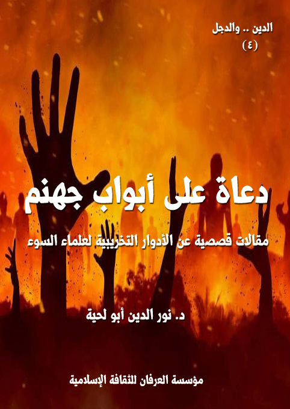

الكتاب: دعاة على أبواب جهنم
المؤلف: أ.د. نور الدين أبو لحية
الناشر: دار الأنوار للنشر والتوزيع
الطبعة: الثانية، 1437 هـ
عدد الصفحات: 128
ISBN: 978-3-330-84780-4
لمطالعة الكتاب من تطبيق مؤلفاتي المجاني وهو أحسن وأيسر: هنا

التعريف بالكتاب
في هذه المقالات القصصية حاولنا أن نربط بين ما ورد في القرآن الكريم من حديث عن علماء السوء، وأدوارهم التخريبية في الأمم السابقة، وكيف ورث علماء السوء من هذه الأمة تلك الخلال، وراحوا ينفذونها بدقة.
دعاة على أبواب جهنم (4)
من المغالطات الكبرى التي نوهم بها أنفسنا تصورنا أننا نعبد الله حينما نجادل بكل ما أوتينا من قوة عن أولئك الدعاة والعلماء الذين لا دور لهم إلا تخريب حياة الناس في الدنيا، وجرهم بسلاسل الكذب والبهتان إلى جهنم في الآخرة..
وسبب هذه المغالطة هو إعراضنا عن القرآن الكريم، وتدبره، وتفعيله في الحياة..
ذلك أننا عندما نقرأ ما ورد من أوصاف عن علماء بني إسرائيل، وأنهم السبب الأكبر في كل ما حصل لهم من انحرافات، نتصور أن ذلك خاص ببني إسرئيل، وأننا أفضل الأمم، وأن علماءنا ليسوا كعلمائهم، وأن دعاتنا ليسوا كدعاتهم، وكأن سنة الله تسير مع جميع الأمم سيرا مطردا، ولا تتخلف إلا في هذه الأمة، مع أن سنة الله لا تتبدل ولا تتغير: {سُنَّةَ اللَّهِ فِي الَّذِينَ خَلَوْا مِنْ قَبْلُ وَلَنْ تَجِدَ لِسُنَّةِ اللَّهِ تَبْدِيلًا} [الأحزاب: 62]
ولهذا فإنا في هذه المقالات القصصية نحاول أن نرسم من خلال الواقع والتاريخ مشاهد لعلماء لا يختلفون عن علماء السوء الذين كانوا في الأمم السابقة.
ونرى أن التشهير بهم واجب شرعا، فلا يمكن للناس أن يتدينوا
دعاة على أبواب جهنم (5)
بالدين الأقوم الذي أرادهم الله أن يتدينوا به، وهم يرون كل حين من يحرضهم على الدين الأعوج، ويدعوهم إليه بكل الوسائل.
ولسنا مبتدعين في هذا السلوك، فرسول الله صلى الله عليه وآله وسلم حذرنا من علماء السوء، وأخبر أنهم سبب الفتن، فقال: (إنَّ أخوف ما أخاف على أمَّتي كلّ مُنافق عليم اللِّسان) (1)، وقال: (إنَّ أخوف ما أخاف عليكم الأئمَّة المضلُّون) (2)، وقال: (يخرج قوم من أمتي يقرءون القرآن ليست قراءتكم الى قراءتهم شيئا، ولا صلاتكم الى صلاتهم شيئا، ولا صيامكم الى صيامهم شيئا، يقرأون القرآن يحسبون أنه لهم وهو عليهم لا تجاوز صلاتهم تراقيهم، يمرقون من الاسلام كما يمرق السهم من الرمية) (3)
بل إن رسول الله صلى الله عليه وآله وسلم أمرنا ألا نقف مكتوفي الأيدي أمامهم، بل دعانا إلى استعمال كل الوسائل للتحذير منهم، ففي الحديث:: (يخرج في آخر الزمان قوم كأن هذا منهم يقرأون القرآن لا يجاوز حناجرهم، يمرقون من الاسلام كما يمرق السهم من الرمية، سيماهم التحليق، لا يزالون يخرجون حتى يخرج آخرهم مع المسيح الدجال، فإذا لقيتموهم فاقتلوهم، هم شر
__________
(1) ... رواه الطبراني في الكبير والبزار ورواته محتج بهم في الصحيح.
(2) ... رواه أحمد وغيره.
(3) ... رواه مسلم وابو داود وابو عوانة.
دعاة على أبواب جهنم (6)
الخلق والخليفة) (1)
وتفعيل هذه الأحاديث في الحياة يدعونا إلى البحث والتحقيق عنهم بدقة، وعزل كل ما كتبوه أو دعوا إليه، حتى لا يتشوه دين الله الجميل بأهوائهم وفتنهم.. لأن ذلك لا يقل عن البحث عن الرواة السوء الذين كذبوا على رسول الله صلى الله عليه وآله وسلم إن لم يكونوا أخطر منهم، قال تعالى: {وَمَنْ أَظْلَمُ مِمَّنِ افْتَرَى عَلَى اللَّهِ كَذِبًا أَوْ كَذَّبَ بِآيَاتِهِ إِنَّهُ لَا يُفْلِحُ الظَّالِمُونَ} [الأنعام: 21]
ولهذا، فإنا في هذه المقالات حاولنا أن نربط بين ما ورد في القرآن الكريم من حديث عن علماء السوء، وأدوارهم التخريبية في الأمم السابقة، وكيف ورث علماء السوء من هذه الأمة تلك الخلال، وراحوا ينفذونها بدقة.
وأول ما قاموا بتنفيذه لتصلح خططهم التخريبية أنهم وضعوا لأنفسهم حصانة تحميهم من النقد والرد والتحذير.. وأن لحومهم مسمومة، فكل من أكل منها مات، وكل من اقترب من ساحتهم سيعذب لا محالة، وستصيبه أنواع الآفات في الدنيا والآخرة..
وقد آتت تلك التحذيرات دورها للأسف، فالكثير يتجرأ على القرآن الكريم، فيعطله، ويشوهه، ويغير معانيه، ويتجرأ على رسول الله صلى الله عليه وآله وسلم، فيحوله إلى ما شاء له هواه.. لكنه إن جاء إلى أولئك العلماء تجده جاثيا بين أيديهم،
__________
(1) ... رواه ابن أبي شيبة وأحمد والنسائي والطبراني في الكبير والحاكم.
دعاة على أبواب جهنم (7)
ساجدا لهم، لا يتجرأ على أن ينبس ببنت كلمة في حقهم.. وهذا هو الشرك بعينه، والذي قال الله تعالى فيه: {وَمِنَ النَّاسِ مَنْ يَتَّخِذُ مِنْ دُونِ اللَّهِ أَنْدَادًا يُحِبُّونَهُمْ كَحُبِّ اللَّهِ وَالَّذِينَ آمَنُوا أَشَدُّ حُبًّا لِلَّهِ} [البقرة: 165]، وقال: {وَجَعَلُوا لِلَّهِ أَنْدَادًا لِيُضِلُّوا عَنْ سَبِيلِهِ} [إبراهيم: 30]
انطلاقا من هذا، فإن المرحلة الأولى في التدين الصحيح تبدأ من التخلص من كل علاقة تربط المتدين بهذا الصنف من العلماء والدعاة، لأنهم الحجاب الأكبر الحائل بين الخلق والحق..
والمرحلة الثانية تنطلق من تحطيم هذه الأنداد التي صارت تعبد من دون الله، فلا يكفي أن يتدين المرء في نفسه، وهو يرى المخربين يشوهون دين الله، ويقضون عليه، وهو يتفرج، وكأن الأمر لا يعنيه.
والكثير للأسف من هؤلاء الساكتين ينطلقون من رعاية مصالحهم الشخصية، لأنهم يخافون أن يصطدموا مع المجتمع الخاضع لسيطرة علماء السوء، أو يخافوا أن يجرحوا أو يصنفوا أو يحجر عليهم..
وكل هذه المخاوف لا قيمة لها، لأن من ضريبة التواصي بالحق التواصي بالصبر، ومن ضريبة النهي عن المنكر تحمل أذى أصحاب المنكر، وقد قال رسول الله صلى الله عليه وآله وسلم يصف ذلك: (سيأتي على الناس سنوات خداعات يصدق فيها الكاذب ويكذب فيها الصادق، ويؤتمن فيها الخائن، ويخون فيها الأمين،
دعاة على أبواب جهنم (8)
وينطق فيها الرويبضة، قيل: يا رسول الله وما الرويبضة؟ قال: (الرجل التافه ينطق في أمر العامة) (1)
__________
(1) ... رواه أحمد وابن ماجة.
دعاة على أبواب جهنم (9)
من أصناف الدعاة إلى جهنم، والذين ذكرهم القرآن الكريم، وبين خطرهم من يمكن أن يطلق عليه لقب (اللاهثين)، وهو وصف قرآني دقيق لصنف من الناس ركن إلى الدنيا، واتبع هواه، وصار يبحث عن الجماهيرية والشهرة والمنصب والمال.. وصار كل همه من تلك الآيات التي حفظها، والعلوم التي درسها أن يقتنص قلوب الناس وجيوبهم ليرضى هواه ونزوته وغرائزه..
لن أستعجل فأصف هذا الداعية المجرم، وإنما أترك القرآن الكريم الذي لا تفنى عجائبه ليقوم بذلك، يقول تعالى: {وَاتْلُ عَلَيْهِمْ نَبَأَ الَّذِي آتَيْنَاهُ آيَاتِنَا فَانْسَلَخَ مِنْهَا فَأَتْبَعَهُ الشَّيْطَانُ فَكَانَ مِنَ الْغَاوِينَ (175) وَلَوْ شِئْنَا لَرَفَعْنَاهُ بِهَا وَلَكِنَّهُ أَخْلَدَ إِلَى الْأَرْضِ وَاتَّبَعَ هَوَاهُ فَمَثَلُهُ كَمَثَلِ الْكَلْبِ إِنْ تَحْمِلْ عَلَيْهِ يَلْهَثْ أَوْ تَتْرُكْهُ يَلْهَثْ ذَلِكَ مَثَلُ الْقَوْمِ الَّذِينَ كَذَّبُوا بِآيَاتِنَا فَاقْصُصِ الْقَصَصَ لَعَلَّهُمْ يَتَفَكَّرُونَ} [الأعراف: 175، 176]
سيرجع الكثير منكم إلى كتب التفسير، ويقولون لي: ويلك.. هذه الآيات نزلت في بلعم بن باعوراء.. ذلك الشقي الذي وصفه مالك بن دينار، فقال: (كان من علماء بني إسرائيل، وكان مجاب الدعوة، يقدمونه في الشدائد، بعثه نبي الله موسى إلى ملك مدين يدعوه إلى الله، فأقطعه وأعطاه، فتبع دينه
دعاة على أبواب جهنم (10)
وترك دين موسى، عليه السلام) (1)
وبعضهم يقول لي هو أمية بن الصلت.. فقد (اتصل إليه علم كثير من علم الشرائع المتقدمة، ولكنه لم ينتفع بعلمه، فإنه أدرك زمان رسول الله صلى الله عليه وآله وسلم، وبلغته أعلامه وآياته ومعجزاته، وظهرت لكل من له بصيرة، ومع هذا اجتمع به ولم يتبعه، وصار إلى موالاة المشركين ومناصرتهم وامتداحهم، ورثى أهل بدر من المشركين بمرثاة بليغة) (2)
وأنا لن أرد عليهم.. ولن أكذب ما قالوا، فالآيات الكريمة تصدق على بلعم بن باعوراء، وعلى أمية بن الصلت.. لكني فقط أريد أن أضيف مصداقا آخر لشخص رأيته بعيني، وسمعته بأذني.. هو أشبه الناس ببلعم وأمية.. وليس هناك من فرق بينهما إلا أن صاحبي من أمة محمد صلى الله عليه وآله وسلم.. والآخران من غيرها من الأمم.. وهذا ليس فرقا مهما، فالعدالة الإلهية المطلقة لا تفرق بين أمة وأمة.. {لَيْسَ بِأَمَانِيِّكُمْ وَلَا أَمَانِيِّ أَهْلِ الْكِتَابِ مَنْ يَعْمَلْ سُوءًا يُجْزَ بِهِ وَلَا يَجِدْ لَهُ مِنْ دُونِ اللَّهِ وَلِيًّا وَلَا نَصِيرًا} [النساء: 123]
طبعا هذا المصداق الجديد الذي سأذكره لكم، ليس هو البلعم الوحيد، أو اللاهث الوحيد، بل يمكنكم أن تضيفوا بلاعم جددا، لنخرج موسوعة
__________
(1) ... تفسير ابن كثير (3/ 507).
(2) ... تفسير ابن كثير (3/ 507).
دعاة على أبواب جهنم (11)
للاهثين الذين انسلخوا من القيم التي جاء بها دينهم.. وركنوا إلى الدنيا.. واتبعوا أهواءهم.. وقدموا الخدمات الجليلة للمشروع الشيطاني في تدمير الإنسان، وتدمير كل هدي يرفع الإنسان.
كان تاريخ اكتشافي لتفعيل تلك الآية الكريمة، وتشرفي برؤية أخ من إخوان بلعم بن باعوراء وأمية بن الصلت يعود إلى حوالي عشر سنوات من اليوم.. ومن ذلك الحين وأنا أرى اللاهثين يزداودون كل يوم عددا وعدة وركونا.. وكل يوم أراهم، وهم يوظفون في كل مشاريع التخريب التي تمر بها أمتنا..
وطبعا لن أقص عليكم الأحداث الواقعية بتفاصيلها، ولن أسمي لكم أي اسم.. فذلك لن يفيدكم.. وقد يضرني.. وإنما سأقص عليكم روح ما رأيت، واحكموا بما شئتم.
في قريتنا المتواضعة كان لنا إمام بسيط ومحترم.. كان في كل جمعة يقدم لنا بعض المواعظ التي استطاع تحضيرها طيلة الأسبوع.. كان يحثنا فيها على التقوى والصدق وحسن الخلق.. وكان يذكرنا كل حين بمصيرنا الأبدي.. ويرسم لنا خارطة مفصلة بذلك.. وكان أكثر الناس يرضون بذلك، ويتأثرون به على الرغم من أنه لم تكن للإمام تلك الفصاحة التي يظهر بها الخطباء على شاشات التلفاز..
دعاة على أبواب جهنم (12)
لكنه ولتواضعه وأدبه وعفافه وزهده واهتمامه بأداء وظيفته على أحسن ما يكون كان محبوبا عند عوام الناس، ولذلك كان الكثير منهم يعينه في تنظيف المسجد، وفي تنظيم الأطفال الذين يداومون على الحضور لحفظ القرآن الكريم.. وغير ذلك من الخدمات التي يحتاجها المسجد.
ظللنا فترة على هذه الصفة إلى أن ظهر فينا بعض الأغنياء ورجال الأعمال الذين بدا لهم فجأة أن يجمعوا بين المال والدين.. وقد فرحنا بهم في مسجدنا كثيرا.. خاصة وأنهم غيروا الزرابي العتيقة، وأبدلوها بزرابي جديدة، ثم غيروا دورات المياه.. ثم غيروا صباغة المسجد، وأضافوا الكثير من الزخارف فيه.. وقد بالغوا في ذلك قليلا لأن الكثير من أهل القرية استبدلوا الجلوس الهادئ في المسجد للذكر أو القراءة بالتجول في أنحائه ورؤية الزخاف والألوان والتعجب منها ومن جمالها.
مهما كان ذلك، فقد كنا راضين عن هؤلاء، ندعو لهم كل حين بالثبات، وبأن يبارك الله في أموالهم.. وكان إمام المسجد يفعل ذلك كل جمعة.. فكلما قدموا خدمة من الخدمات ذكرهم وشكرهم ودعا لهم..
لكن هؤلاء الأغنياء لم يكفهم أن يغيروا الحالة المادية للمسجد، وإنما أرادوا أن يضيفوا إلى القرية أشياء جديدة لم تكن تخطر على أعيان القرية وكبارها على بال..
دعاة على أبواب جهنم (13)
في ذلك الاجتماع الذي ضم بعض الأغنياء من رجال الأعمال مع شيخ من كبار أهل القرية وأعيانها جرى هذا الحوار:
الغني: لقد مللنا من خطب هذا الإمام.. ففي كل مرة يعيد نفس الكلمات، ويردد نفس المعاني..
الشيخ: وماذا تريده أن يقول.. وهل الدين سوى ما يردده.. إنه يذكرنا بالتقوى والصدق والإخلاص وبإقامة الصلاة.. وأداء الواجبات.. ألا ترى هذا كافيا؟
الغني: بلى.. ولكن الناس يحبون التجديد.. يحبون أن يسمعوا كل مرة شيئا لم يسمعوه من قبل.
الشيخ: وهل طبق الناس ما قاله حتى يطلبوا منه الجديد؟
الغني: أنت لم تفهمني.. نحن الآن في واقع مختلف.. وهناك الكثير من الدعاة الكبار الذين بهروا العالم بفصاحتهم وبلاغتهم وخطبهم.. فهم اليوم هنا.. وغدا في أمريكا.. وبعد غد في أوروبا.. وهم يظهرون على القنوات الكثيرة يفتون، ويخطبون..
الشيخ: عجبا.. هل هذا صحيح؟
الغني: أجل.. مشكلتك يا شيخ أنك إلى الآن لا تزال تعيش القرون الوسطى.. فليس في بيتك تلفاز.. وحتى المذياع البسيط الذي تملكه ليس فيه
دعاة على أبواب جهنم (14)
إلا القناة المحلية اليتيمة، ولهذا لا تعرف العالم والتغيرات التي تحصل فيه كل يوم.
الشيخ: أنا لم أتعجب من تنقلاتهم وخطبهم وإنما أتعجب من قدرتهم على الجمع بينها وبين التحضير للخطب والفتاوى.. فلا يمكن لشخص أن يتكلم في الدين إلا بعد البحث والنظر والاجتهاد.. ألا ترى إمامنا كيف يبقى أسبوعا كاملا يحضر في الكلمات القليلة التي يريد أن يقدمها لنا.. وفوق ذلك يأتيني ويعرضها علي قبل تقديمها.. ويستشيرني في كل كلمة يريد أن يطرحها.
ضحك الغني، وقال: ولم ذلك؟
الشيخ: لقد ذكر لي الإمام أنه يخاف أن يكون سببا في أي فتنة قد تحصل في القرية.. ولذلك يراعي كل كلمة يقولها، وكل معنى يشير إليه.. وإذا ما استفتاه أي واحد منا تجده يذهب إلى الكتب المختلفة، ويسأل من يثق فيهم من المشايخ.. ثم لا يجيب إلا بعد أن يدرس الفتوى من جميع الجوانب.
الغني: ذلك لجهله ومستواه الضعيف.
غضب الشيخ، وقال: بل ذلك لورعه وتقواه.. فالدين ليس لهوا ولعبا بحيث يمكن لأي شخص أن يتحدث فيه..
الغني: لا بأس.. أنا لا أنكر أن إمامنا يحفظ القرآن الكريم حفظا
دعاة على أبواب جهنم (15)
متقنا.. ولهذا يملأ خطبه بترديد آياته.. ولا أنكر أنه درس العلوم الشرعية، ويفهمها.. ولكن هناك أشياء أخرى يحتاجها الناس غير هذه الأمور.
الشيخ: مثل ماذا؟
الغني: الناس يحتاجون إلى رجل فصيح بليغ يملأ خطبه بالمحسنات البديعية.. ويقرأ لهم كل حين أبياتا من الشعر العذب.. ويخلط معهما بعض الأحداث والقصص.. وغيرها.. وكل ذلك مما يؤثر في الناس ويجعلهم يتدينون التدين الصحيح.
الشيخ: أتتهم دين الناس.. أنت تراهم بحمد الله يحرصون على الصلاة، ويؤدون الزكوات، وإذا ما أصاب أحد منا فاقة هرعوا إليه يواسونه بحسب ما أطاقوا.. نعم هم ليسوا بالمستوى المطلوب.. ولكن لهم بحمد الله من الصدق والإخلاص ما يغفر لهم ما قد يقعون فيه من أخطاء.
الغني: لن أجادلك في هذا.. وأنا وإخواني لم نأتك لأجله.. وإنما جئناك لأجل أمر نرجو أن توافقنا عليه.
الشيخ: ومنذ متى خالفتكم.. إن كان في الأمر مصلحة للقرية، فأنا وجميع القرية في خدمتكم.
الغني: نحن نريد أن نستضيف بعض الدعاة الكبار ممن يظهرون على القنوات الفضائية ليلقي خطبة في مسجدنا.
دعاة على أبواب جهنم (16)
الشيخ: ولم يا بني.. ما دام هذا الشيخ يظهر في القنوات الفضائية.. فما الحاجة لإرهاقة وإحضاره.. يمكن للناس أن يشاهدوه عليها؟
الغني: أنت تعرف أن الخبر ليس كالعيان.. وأن من رأى ليس كمن سمع.
الشيخ: صدقت في هذا.. ولكن ألا ترى أن ذلك قد يفتن الناس.. فهم الآن راضون عن إمامهم، ويبكرون لسماع خطبه، ويستفيدون منها.. فإذا ما جاءهم بعد ذلك من يكون في أعينهم أفضل من إمامهم، زهدوا فيه، ورغبوا عنه، وأضر ذلك بهم..
الغني: لا تقل هذا.. فالناس يحبون التنوع.. وسوف لن يزهدوا في إمامهم، وسوف يظلون يستفيدون منه.. فلا تخف ولا تفزع، ولا تعطي الأمر كل هذا التضخيم.
الشيخ: لست أدري ما أقول لكم.. ولكن أتعلمون التكاليف المادية التي يتطلبها إحضار هذا الشخص؟
الغني: لا عليك.. هذا نتحمله نحن.. وسوف نطلب من أهل القرية أن يقدموا له بعض ما يطيقون من هدايا.. فمن الحرج أن نستضيف عالما كبيرا، ثم يخرج من عندنا صفر اليدين.
الشيخ: إن كنتم تريدون بهذا العمل وجه الله.. فهناك الكثير من
دعاة على أبواب جهنم (17)
الفقراء.. وأولهم إمامنا.. ألا تعلمون أنه عمل عملية لابنه، كلفته مالا كثيرا، باع لأجله كل ما يملك، واستدان فوق ذلك مالا كثيرا.. ولم يخبرنا خشية أن يحرجنا.. ولم أعلم ذلك إلا قبل فترة قصيرة.. فهلم بتلك الأموال نقدمها لهذا الإمام ليسد ديونه، ويترك التقشف الذي يعيشه..
الغني: ألا تعلم أن هذا الإمام يتقاضى مرتبا من الدولة.. حسبه به.. وليحمد الله أنه ينال مرتبا على عمل هين كعمله..
الشيخ: لست أدري ما أقول لكم.. ولكني أشعر أن قريتنا الهادئة البسيطة لن تبقى هادئة أو بسيطة.. أشعر بالطوفان يكاد يغمرها.. والنيران تكاد تحرقها..
الغني: هكذا أنتم دائما.. كلما نريد أن نتقدم إلى الأمام تعيدوننا إلى الخلف.
الشيخ: أجيبوني.. ألستم تريدون أن تصرفوا مالكم في سبيل الله، وتبحثون عن عمل خيري لذلك؟
الغني: بلى.. وإلا فما حاجتنا لتضييع أموالنا.
الشيخ: فأنا أدلكم على عمل خير يمكنه أن يخدم القرية خدمة جليلة.
الغني: ما هو؟
الشيخ: دعكم من المسجد.. ومن دين الناس.. فالدين لا يحتاج إلى كل
دعاة على أبواب جهنم (18)
تلك التكاليف التي تكلفون بها أنفسكم.. هناك أمر نحتاجه في قريتنا.. وبسببه يوقف الآباء أبناءهم عن الدراسة.
الغني: وما هو؟
الشيخ: أنتم تعلمون أنه لا توجد ثانوية بقريتنا.. ولذلك يضطر أبناؤنا إلى السفر إلى المدينة، والمعاناة كل يوم لأجل الدراسة.. والكثير منهم ينقطع عنها بسبب ذلك.. فلو أنكم أنفقتم أموالكم في شراء بعض الحافلات التي توصل التلاميذ، ويكون لكم شيء من ريعها، ويكون لكم فوق ذلك أجر عظيم.
الغني: ذلك شيء آخر.. وهو ليس بالأهمية التي يكتسيها إحضار الداعية الذي ذكرناه لك..
لم يجد الشيخ إلا أن يتركهم.. وهو يردد بحزن قوله تعالى: {فَسَتَذْكُرُونَ مَا أَقُولُ لَكُمْ وَأُفَوِّضُ أَمْرِي إِلَى اللَّهِ إِنَّ اللَّهَ بَصِيرٌ بِالْعِبَادِ} [غافر: 44]
ما هي إلا أيام قليلة حتى رأينا إعلانات كثيرة معلقة في كل مكان.. في قريتنا وغيرها من القرى المجاورة.. وعليها صورة للداعية الذي تحدثوا عنه، وأمامها دعوة لحضور خطبة له يقدمها في المسجد.. وأمامها طلب بسيط من الناس أن يكرموا الداعية بما يطيقون باعتباره ضيفا على القرية، وأنه لا ينبغي
دعاة على أبواب جهنم (19)
أن يأخذ عنها أي صورة سيئة.
وجاء اليوم الموعود، وحضر الداعية الكبير في موكب ضخم من السيارات.. وكان معه كاميرات وأجهزة صوت وإضاءة وغيرها.. فتعجبت من ذلك.. وزال عجبي حين علمت أن لهذا الداعية قناة فضائية، وأنه يسجل كل صغيرة وكبيرة يفعلها، ثم يبثها على قناته الفضائية التي تستقطب الملايين من الناس.
وصعد المنبر وخطب خطبة بليغة مملوءة شعرا وسجعا ومحسنات بديعية..
وقد رأى أهل قريتنا لأول مرة شخصا يلهث وهو يخطب.. فقد تعودوا على إمامهم الذي كان يقرأ خطبته من الورقة بهدوء وتؤدة من دون أي تكلف أو معاناة.. لكن هذا الخطيب الكبير كان يرفع صوته مرة، ويخفضه أخرى.. ويقرأ الشعر بطريقة خاصة.. ويسرد القصص بطريقة مختلفة.. ويلهث بين ذلك كله كما تلهث الحيوانات التي ذكرتها الآية الكريمة.
وقد لاحظت أن الفريق الذي حضر معه كان يسجل كل ما يحصل مع الشيخ، فلا يغادر صغيرة ولا كبيرة إلا أحصوها إلا أمرا واحدا لم أرهم يسجلونه، ولكني سجلته بدقة في ذاكرتي، وحزنت بسببه كثيرا.
دعاة على أبواب جهنم (20)
بعد أن انتهى من خطبته اجتمع الناس حوله، وأولهم الأغنياء ورجال الأعمال، ثم راحوا يصطفون ليقدموا له الهدايا، ويأخذون صورا معه..
كانت الهدايا كثيرة جدا.. وغالية جدا.. وكان في إمكانها أن توفر للقرية الكثير من الحاجات التي تفتقر إليها..
ولكنه لجشعه لم يكتف بها، لقد طلب من أهل القرية البسطاء أن يجمعوا المال لقناته الفضائية، والتي تفتقر كل شهر إلى مبلغ كبير من المال لتسديد حقوق الموظفين، والأقمار الصناعية، وغيرها..
وبالفعل جمع أهل القرية وخاصة أغنياءهم له من المال ما أطاقوا.. واستمروا على ذلك فترة طويلة.. وقد توقف بسبب ذلك دعمهم للجمعية الخيرة الوحيدة في القرية.
لم يكن هذا هو المشكل الوحيد الذي تسبب فيه هذا اللاهث.. لقد حصل ما هو أخطر من ذلك.
في الجمعة التي تلت حضور اللاهث كان عدد الحضور لخطبة الإمام قليلا جدا.. وبدأ العدد يقل ويقل إلى أن لم يبق مع الإمام سوى بعض الشيوخ الكبار.
ثم أسس الشباب مع الأغنياء مسجدا آخر.. وأحضروا له داعية تتلمذ على القناة الفضائية التي يديرها اللاهث..
دعاة على أبواب جهنم (21)
وبدأ الخراب يعم القرية.. وبدأ الطوفان يغزوا بيوتها.. فصار الناس مثل جمر الغضا ممتلئين حقدا بعضهم على بعض.. وأصبحت المنابر الطاهرة محلا للعواصف والزوابع والأعاصير، وافتقد الناس الهدوء والسلام والطمأنينة..
ثم ما هي إلا فترة قصيرة حتى أعلنت الحرب.. واحترقت القرية بأهلها وخطبائها ومساجدها..
أما اللاهث.. فلم يسمع بما جرى.. وإنما كان ينتقل من قرية إلى قرية، ومن بلد إلى بلد يأخذ الهدايا والتحف، ويخلف العواصف والأعاصير.
دعاة على أبواب جهنم (22)
من أخطر أصناف الناس الذين وقفوا في وجه الأنبياء عليهم الصلاة والسلام - كما يذكر القرآن الكريم - من يمكن أن نطلق عليه لقب (الفرحين)
وهو لقب يمكن اشتقاقه بسهولة من قوله تعالى عند حكاية مواقف القرى من أنبيائها: {فَلَمَّا جَاءَتْهُمْ رُسُلُهُمْ بِالْبَيِّنَاتِ فَرِحُوا بِمَا عِنْدَهُمْ مِنَ الْعِلْمِ وَحَاقَ بِهِمْ مَا كَانُوا بِهِ يَسْتَهْزِئُونَ} [غافر: 83]
وهي تعني بمنطوقها كما يقول ابن كثير: (لما جاءتهم الرسل بالبينات، والحجج القاطعات، والبراهين الدامغات، لم يلتفتوا إليهم، ولا أقبلوا عليهم، واستغنوا بما عندهم من العلم في زعمهم عما جاءتهم به الرسل) (1)
وتعني بمفهومها معاني كثيرة نراها في واقعنا.. لا من اللادينيين أو الملاحدة أو الحداثيين فقط.. وإنما من الذين يحسبون أنفسهم من أتباع الأنبياء، بل من الدعاة إليهم، بل من الناطقين باسمهم.
فمنهم الكثير من الذين يفرحون بهذه النسبة، ويغترون بها، ويتصورون أنها كافية للنجاة، بل لتسلم أرقى مدارج الفوز والفلاح.. ناسين أن الله سبحانه وتعالى أخبر عن سنته في خلقه، وأنه كما اختبر أقوام الأنبياء،
__________
(1) ... تفسير ابن كثير (7/ 160).
دعاة على أبواب جهنم (23)
سيختبر أتباعهم.. وأنه كما سقط في الاختبار أقوام الأنبياء، فيمكن أن يسقط في الاختبار من يزعمون أنهم أتباعهم.
فسنة الله في عدله واحدة، لا يفرق بين قوم وقوم، وبين ملأ وملأ، قال تعالى: {أَمْ حَسِبْتُمْ أَنْ تَدْخُلُوا الْجَنَّةَ وَلَمَّا يَأْتِكُمْ مَثَلُ الَّذِينَ خَلَوْا مِنْ قَبْلِكُمْ} [البقرة: 214]، وقال: {أَمْ حَسِبْتُمْ أَنْ تُتْرَكُوا وَلَمَّا يَعْلَمِ اللَّهُ الَّذِينَ جَاهَدُوا مِنْكُمْ وَلَمْ يَتَّخِذُوا مِنْ دُونِ اللَّهِ وَلَا رَسُولِهِ وَلَا الْمُؤْمِنِينَ وَلِيجَةً وَاللَّهُ خَبِيرٌ بِمَا تَعْمَلُونَ} [التوبة: 16]
ولذلك من الأجدى لنا، ولعافيتنا في الدنيا والآخرة، وحتى لا نسقط في هذا الاختبار العظيم أن نبحث عن مصاديق تلك الآية الكريمة في نفوسنا ومجتمعاتنا قبل أن نلصقها بقوم هود أو قوم صالح.. ونكتفي بذلك.
وسأحكي لكم حكاية عن أحد هؤلاء الدعاة الكبار الذين يحسبون أنفسهم دعاة إلى الجنة، بينما هم - بالتصنيف القرآني - ليسوا سوى إخوان أو توائم لأولئك الذين واجهوا الرسل، وحاربوهم، واكتفوا بما عندهم من العلم، واغتروا به.
وطبعا لن أذكر لكم اسمه.. حتى لا تتصوروا أنني أخصص الحقائق القرآنية بالأسماء، فالقرآن أسمى من أن يخصص أو يقيد أو تغل معانيه بقيود التأويل والتفسير..
دعاة على أبواب جهنم (24)
لم يكن الداعية من قريتنا البسيطة المتواضعة، وإنما كان من مدينة من المدن الكبرى، وكان يجالس الأمراء والملوك، ويأكل أصناف الطيبات معهم، وكان أحب الطعام إليه المضيرة (1).. وما أدراكم ما المضيرة..
وقد صار له بفضل الهدايا وأخواتها قصر كقصور الأمراء، وخدم كخدمهم.. وجشع لا يختلف كثيرا عن جشعهم.
وكان الذي دعاه إلى قريتنا نفر من الناس.. قد يطلق عليهم بالمصطلح القرآني لقب (الملأ).. فقد كانت لهم ثروة وجاه وعلاقات كبرى ببعض البلاد التي تصدر الذهب الأسود، وتصدر معه فهمها الأسود للدين والحياة.
وسبب دعوتهم له – كما علمت ذلك من مصادر موثوقة - أنه ظهر في قريتنا بعض طلبة العلم ممن تحررت عقولهم من قيود التقليد، فراحوا يحققون في تعاليم الدين ليميزوا الإسلام الأصيل من الإسلام الدخيل، وليفصلوا بين الخبيث والطيب.. وقد استنتجوا من خلال بحثهم الطويل والمعمق أنه لا يمكن للإسلام الأصيل أن تقوم قائمته من غير استئصال لمنابع الخبث التي حرفت الدين، وحولته عن مساره الصحيح.. وقد صادفوا في أثناء
__________
(1) ... هي أن يطبخ اللحم باللبَن البحت الصَّريح الذي قد حَذَى اللسان حتى يَنضَجَ اللحم وتَخثُرَ المضيرة.. وقد كان معاوية يقدمها للمقربين منه.
دعاة على أبواب جهنم (25)
بحثهم حديثا لرسول الله صلى الله عليه وآله وسلم انطلقوا منه، وهو قوله صلى الله عليه وآله وسلم: (أول من يبدل سنتي رجل من بني أمية) (1)
وقد راحوا يبحثون في مصداق هذا الحديث عبر المناهج المختلفة، فاستقر رأيهم بعد البحث والتنقيب على أن معاوية هو الشخص الوحيد الذي تصدق عليه جميع المواصفات التي وردت في الحديث..
فراحوا لذلك يبحثون في سيرته، وتشويهاته للدين.. وقد أثار ذلك حفيظة الملأ من أهل قريتنا، فحذروهم بكل صنوف التحذير، وكلفوا خطباء المساجد بأن يخطبوا الخطب الطويلة في فضائل معاوية وخدماته للدين..
ولكن كل ذلك لم يجدي.. فقد كانت المعاني والأدلة التي وصل إليها الباحثون المتحررون أكبر من أن ترد عليها تلك الخطب الممجوجة المملوءة بالجعجعة التي لا طحين فيها.
فاستقر رأيهم أن يجمعوا من المال ما أطاقوا، ويحضروا بعض الدعاة
__________
(1) ... قال الألباني في (السلسلة الصحيحة) 4/ 329: أخرجه ابن أبي عاصم في (الأوائل): حدثنا عبيد الله بن معاذ حدثنا أبي حدثنا عوف عن المهاجر أبي مخلد عن أبي العالية عن أبي ذر أنه قال ليزيد ابن أبي سفيان: سمعت رسول الله (، فذكره. قلت: وهذا إسناد حسن، رجاله ثقات رجال الشيخين غير المهاجر وهو ابن مخلد، أبو مخلد، قال ابن معين: (صالح). وذكره ابن حبان في (الثقات).. قلت: فمثله لا ينزل حديثه عن مرتبة الحسن. والله أعلم. ولعل المراد بالحديث تغيير نظام اختيار الخليفة، وجعله وراثة. والله أعلم)
دعاة على أبواب جهنم (26)
النجديين الكبار.. ممن لهم صيت وعلم.. لعلهم يفيدون القرية، ويحرروها من أفكار المتحررين.
وجاء اليوم الموعود، وتزينت القرية بكل أصناف الزينة، وحضرت أطباق المضيرة ليتناولها الناس جميعا، لعلها تحدث فيهم من التأثير ما أحدثته في الأيام الخوالي.
واجتمع الناس حول الداعية النجدي الكبير، والذي بدأ حديثه بقراءة قوله تعالى: {مُحَمَّدٌ رَسُولُ اللَّهِ وَالَّذِينَ مَعَهُ أَشِدَّاءُ عَلَى الْكُفَّارِ رُحَمَاءُ بَيْنَهُمْ تَرَاهُمْ رُكَّعًا سُجَّدًا يَبْتَغُونَ فَضْلًا مِنَ اللَّهِ وَرِضْوَانًا سِيمَاهُمْ فِي وُجُوهِهِمْ مِنْ أَثَرِ السُّجُودِ} [الفتح: 29]
وكنا نتصور أنه سيحدثنا عن الصحابة الذين اتفقت عليهم الأمة جميعا بسنتها وشيعتها، والذين توفرت فيهم كل هذه الخصائص بدقة عالية.. وبذلك ينتفي الخلاف، وتزول الفتنة..
لكنه أبى إلا أن يجعل هذه الآية الكريمة، وكأنها نزلت خصوصا في معاوية بن أبي سفيان، وقد توسل لذلك بكل أنواع الحيل والدهاء التي استفادها من الشخص الذي يدافع عنه.
بعد أن أنهى محاضرته قام بعض الحضور، وقد كان من الباحثين المتحررين الذين ذكرتهم لكم، فقال: لن أجادلك – يا شيخ - في الآية
دعاة على أبواب جهنم (27)
الكريمة.. وفي سبب نزولها.. فقد يكون معاوية أحدهم.. ولكني أريد أن أسألك عن حديث لرسول الله صلى الله عليه وآله وسلم.. فقد ذكر لنا أنك مختص في الحديث.
شعر الفارح بسرور عظيم، وقال: صدقت.. أنا مجاز في الكتب السنة وفي المسانيد والمعاجم والمستخرجات وكل ما تراه من كتب الحديث..
قال الرجل: بورك لك في إجازاتك وفي علومك..
قاطعه الفارح، وقال: نسيت.. لدي كذلك إجازات بشروح متون الحديث، فأنا أرويها عن أصحابها بسندي لا من خلال الكتب المطبوعة.. فلدي سند عال إلى النووي وابن حجر وابن بطال والشوكاني.. وكل من تراهم من المحدثين.. بالإضافة إلى أني نلت إجازة في جميع كتب شيخ الإسلام ابن تيمية، وخصوصا كتابه (منهاج السنة)
قال الرجل: بورك لك في كل ذلك.. ولذلك أرى أنك أحسن من سيحدثني عن هذا الحديث الذي طالما أرقني، وزرع الشبهات في نفسي.. وبسببه اتهمني بعض قومي بالمروق.. ولعلهم يكونون صادقين في ذلك.
قال الفارح: فهلم به..
قال الرجل: لقد قرأت حديثا عن ابن عباس يقول فيه: كنت ألعب مع الصبيان فجاء رسول الله صلى الله عليه وآله وسلم فتواريت خلف باب، قال: فجاء فحطأني حطأة وقال: اذهب وادع لي معاوية، قال فجئت فقلت: هو
دعاة على أبواب جهنم (28)
يأكل، قال: ثم قال لي: اذهب فادع لي معاوية، قال: فجئت فقلت: هو يأكل، فقال: لا أشبع الله بطنه (1).. فما تقول في هذا الحديث؟
شعر الفارح ببعض الغيظ من السؤال، لكنه تمالك نفسه، وقال بكل برودة: نعم الحديث صحيح.. فقد رواه مسلم.
ضجت القاعة، وأخذ الحضور ينظر بعضهم إلى بعض، ويتساءلون: هل حقا هذا الحديث صحيح؟.. وهل كانت كل تلك الفضائل التي ذكرها في شخص هذه صفاته..؟ وهل يجرؤ أحد من الناس على عدم إجابة رسول الله صلى الله عليه وآله وسلم لأجل بطنه؟.. كيف يستقيم هذا ونحن في آخر الزمان نجد من يبيع كل من يملك لزيارة قبر رسول الله صلى الله عليه وآله وسلم، ويتحمل في سبيل ذلك كل أنواع المعاناة؟
ضرب الفارح بيده على الطاولة التي يجلس عليها، وهو يقول: اصبروا.. فللحديث وجوه من التأويل والفهم لا يمكن لأي كان أن يدركها.. فهذه أحاديث رسول الله صلى الله عليه وآله وسلم..
لقد ظن بعض المبتدعة أن هذا الحديث من مثالب معاوية، بئس ما صنعوا، بل الحديث منقبة من مناقبه الكبرى، وخصيصة من خصائصه العظمى، فلم يدع رسول الله صلى الله عليه وآله وسلم لأحد بهذه الدعوة إلا معاوية.
__________
(1) ... رواه مسلم (2604).
دعاة على أبواب جهنم (29)
وقد ورد في رواية الطيالسي في تأويل (لا أشبع الله بطنه) عن بعض السلف، وهو يونس بن حبيب قوله: (معناه والله أعلم: لا أشبع الله بطنه في الدنيا حتى لا يكون ممن يجوع يوم القيامة، لأن الخبر عن النبي صلى الله عليه وآله وسلم: (أطول الناس شبعا في الدنيا أطولهم جوعا يوم القيامة)
انظروا هذا الفهم السديد للحديث..
ومثله موقف الحافظ الجهبذ ابن كثير الذي كان مدركا وواعيا لقيمة هذا الحديث، ولذلك فهمه الفهم المناسب، فقد ذكر في (البداية والنهاية) عند ترجمته لخال المؤمنين معاوية بن أبي سفيان قوله: (وقد انتفع معاوية بهذه الدعوة في دنياه وأخراه.. أما في دنياه: فإنه لما صار إلى الشام أميرا، كان يأكل في اليوم سبع مرات يجاء بقصعة فيها لحم كثير، وبصل فيأكل منها، ويأكل في اليوم سبع أكلات بلحم، ومن الحلوى والفاكهة شيئا كثيرا، ويقول: والله ما أشبع وإنما أعيا، وهذه نعمة ومعدة يرغب فيها كل الملوك.. وأما في الآخرة: فقد أتبع مسلم هذا الحديث بالحديث الذي رواه البخاري وغيرهما من غير وجه عن جماعة من الصحابة. أن رسول الله صلى الله عليه وآله وسلم قال: (اللهم إنما أنا بشر فأيما عبد سببته أو جلدته أو دعوت عليه وليس لذلك أهلا فاجعل ذلك كفارة وقربة تقربه بها عندك يوم القيامة)
انظروا هذا الفهم السني السلفي لحديث رسول الله صلى الله عليه وآله وسلم.. وقد أيده
دعاة على أبواب جهنم (30)
النووي فقال: (وقد فهم مسلم رحمه الله من هذا الحديث أن معاوية لم يكن مستحقا للدعاء عليه، فلهذا أدخله في هذا الباب، وجعله غيره من مناقب معاوية لأنه في الحقيقة يصير دعاء له) (1)
قام شيخ كبير من أعيان القرية، وقال: هل يمكنك سيدي أن تكرر لنا الحديث الأخير الذي ذكرته؟
أعاد الشيخ النجدي الحديث، فقال الشيخ: ألا ترى سيدي أن هذا الحديث لا يتناسب مع كرم أخلاق رسول الله صلى الله عليه وآله وسلم.. إن القرآن الكريم وصف لنا رسول الله صلى الله عليه وآله وسلم فقال: {وَإِنَّكَ لَعَلَى خُلُقٍ عَظِيمٍ} [القلم: 4]
وذكر رحمته ولطفه ولينه، فقال: {فَبِمَا رَحْمَةٍ مِنَ اللَّهِ لِنْتَ لَهُمْ وَلَوْ كُنْتَ فَظًّا غَلِيظَ الْقَلْبِ لَانْفَضُّوا مِنْ حَوْلِكَ} [آل عمران: 159]
بل إن الله تعالى سماه باسمين من أسمائه الحسنى، فقال: {لَقَدْ جَاءَكُمْ رَسُولٌ مِنْ أَنْفُسِكُمْ عَزِيزٌ عَلَيْهِ مَاعَنِتُّمْ حَرِيصٌ عَلَيْكُمْ بِالْمُؤْمِنِينَ رَءُوفٌ رَحِيمٌ} [التوبة: 128]
بل إن الرواة الذين تعرفهم حدثونا أن رسول الله صلى الله عليه وآله وسلم أجاب من سأله: (هل أتى عليك يوم كان أشد من يوم أحد؟)، قال: (لقد لقيت من قومك ما لقيت، وكان أشد ما لقيت منهم يوم العقبة، إذ عرضت نفسي على ابن عبد
__________
(1) ... المنهاج: (16/ 156).
دعاة على أبواب جهنم (31)
ياليل بن عبد كلال، فلم يجبني إلى ما أردت، فانطلقت وأنا مهموم على وجهي، فلم أستفق إلا وأنا بقرن الثعالب فرفعت رأسي، فإذا أنا بسحابة قد أظلتني، فنظرت فإذا فيها جبريل، فناداني فقال: إن الله قد سمع قول قومك لك، وما ردوا عليك، وقد بعث إليك ملك الجبال لتأمره بما شئت فيهم، فناداني ملك الجبال فسلم علي، ثم قال: يا محمد، فقال، ذلك فيما شئت، إن شئت أن أطبق عليهم الأخشبين؟ فقال النبي صلى الله عليه وآله وسلم: بل أرجو أن يخرج الله من أصلابهم من يعبد الله وحده، لا يشرك به شيئا) (1)
ونحن نتعجب: هل رسول الله صلى الله عليه وآله وسلم الذي يسارع إلى اللعن والدعاء على من يغضب عليه هو نفسه هذا الرؤوف الرحيم الذي لم يدعو على المشركين الذي بالغوا في إيذائه.
كان في إمكان النجدي لو لم يكن من الفرحين أن يتراجع بسهولة عن خطئه، وأن يفكر في الدليل، أو أن يشكر المتحدث، ويرحم كبر سنه، أو يعتذر لرسول الله صلى الله عليه وآله وسلم من السبة العظيمة التي رماه بها.
كان في إمكانه أن يفعل مثلما فعل السحرة عندما رأوا الدليل، فيسلم له.. لكنه لم يفعل.. ومثله لن يفعل..
بل راح يستعين بكل الشياطين ليرد عن هذه الحجة الدامغة، ولو
__________
(1) ... صحيح البخاري (4/ 115).
دعاة على أبواب جهنم (32)
بالتقليل من شأن رسول الله صلى الله عليه وآله وسلم نفسه.. فحرمة معاوية عنده أعظم من حرمة رسول الله صلى الله عليه وآله وسلم.
تظاهر الفارح بالهدوء مع أنه في أعماقه كان كالمرجل، وراح يقول: ليس من السهولة لمثلك يا شيخ أن يورد مثل هذه الترهات.. فالدين لا يفهم بالعقل.. الدين أعظم من أن يكون كلأ مباحا لكل من هب ودب ليتكلم فيه..
أما الشبهة التي عرضتها، والتي يدندن حولها الضالون والمبتدعة فمن السهل الرد عليها.. وقد أجاب العلامة الألباني عليها بقوله في السلسلة الصحيحة (1/ 123 – 124): (قد يبادر بعض ذوي الأهواء أو العواطف الهوجاء إلى إنكار مثل هذا الحديث؛ بزعم تعظيم النبي صلى الله عليه وآله وسلم، وتنزيهه عن النطق به! ولا مجال إلى مثل هذا الإنكار؛ فإن الحديث صحيح، بل هو عندنا متواتر؛ فقد رواه مسلم.. وتعظيم النبي صلى الله عليه وآله وسلم تعظيما مشروعا، إنما يكون بالإيمان بكل ما جاء عنه صلى الله عليه وآله وسلم صحيحا ثابتا، وبذلك يجتمع الإيمان به صلى الله عليه وآله وسلم عبدا ورسولا؛ دون إفراط ولا تفريط، فهو صلى الله عليه وآله وسلم بشر بشهادة الكتاب والسنة، ولكنه سيد البشر وأفضلهم إطلاقا بنص الأحاديث الصحيحة، وكما يدل عليه تاريخ حياته صلى الله عليه وآله وسلم وسيرته)
نظر إلى الحضور، وكأنه ينتظر تكبيرا على الحجة العظيمة التي أوردها،
دعاة على أبواب جهنم (33)
لكن أهل قريتنا البسطاء لم يفهموا منها شيئا، لأنه لم يكن فيها أي شيء.
لم يشأ شباب القرية المتحررون أن يجادلوه، بل راح أحدهم يسأله بقوله: لقد روينا في بعض كتب الحديث أن معاوية لما قدم المدينة لقيه أبو قتادة الأنصاري فقال: تلقاني الناس كلهم غيركم يا معشر الأنصار فما منعكم أن تلقوني؟ قال: لم تكن لنا دواب، قال معاوية: فأين النواضح؟ قال أبو قتادة: عقرناها في طلبك وطلب أبيك يوم بدر، ثم قال أبو قتادة: إن رسول الله صلى الله عليه وآله وسلم قال لنا إنا لنرى بعده أثرة، قال معاوية: فما أمركم؟ قال: أمرنا أن نصبر حتى نلقاه، قال: (فاصبروا حتى تلقوه!) (1).. فهل الحديث صحيح؟
قال الشيخ النجدي: أجل.. ولدي فيه إسناد عال إلى مصنفه عبد الرزاق.. وقد ورد في كثير من مصادر الحديث كشعب الإيمان للبيهقي والاستيعاب لابن عبد البر وغيرها..
تعجب أهل القرية من الحديث، ومن إقراره بصحته، فقام بعض الشيوخ، وقال: ألا ترى سيدنا أن معاوية يستهزئ ويسخر من حديث رسول الله صلى الله عليه وآله وسلم للأنصار؟.. ألا ترى في قوله: (فاصبروا حتى تلقوه!) نوعا من الجحود واللامبالاة؟
قال الشيخ النجدي: أنا لا أرى شيئا من ذلك.. بل أراه داعية مصلحا
__________
(1) ... مصنف عبد الرزاق - (ج 11 / ص 60).
دعاة على أبواب جهنم (34)
هاديا.. فقد راح يذكر الأنصار بنصيحة رسول الله صلى الله عليه وآله وسلم حتى لا ينسوها.
قام شاب من المتحررين، وقال: ألا ترى سيدي أن الحديث يدل على أن لمعاوية موقفا سلبيا من الأنصار، وكتب الحديث والتاريخ تثبت أنه كان من أكبر مبغضي الأنصار، وله معهم مواقف كثيرة في قطع العطاء وذمهم وهجائهم وظلمهم والوصية بسفك دمائهم التي كان من نتائجها مجزرة الحرة؟
قال: بلى.. وما في ذلك.. فقد ناوؤوه وحاربوه وكانوا في صف أعدائه، والطبع العادي لأي إنسان هو أن يقف موقفا سلبيا ممن أظهر له العداوة.. والدين لم يأمرنا بأن نخرج عن طباعنا.
قال الشاب: ولكن رسول الله صلى الله عليه وآله وسلم ذكر من علامات المنافقين بغض الأنصار، فقد ورد في الصحيحين قوله صلى الله عليه وآله وسلم في الأنْصَار: (لا يُحِبُّهم إلاَّ مؤمن، ولا يبغضهم إلاَّ مُنافق، مَن أحبهم أحبه الله، ومن أبغضهم أبغضه الله)
قال الفارح: الجواب على هذا سهل جدا، فمن حيث السند فإن هذا الحديث وإن روي في الصحيحين إلا أن من رواته عدي بن ثابت، وقد قال عنه أبو حاتم: صدوق، وكان إمام مسجد الشيعة وقاصّهم.. وقال عنه الإمام الذهبي في كتابه (الكاشف): (ثِقَة، لكنه قَاصّ الشيعة وإمام مسجدهم بالكوفة)
دعاة على أبواب جهنم (35)
وأما من حيث المتن، فالمراد هو بغض الأنصار لكونهم أنصارا، أو لأجل نصرتهم للنبي صلى الله عليه وآله وسلم لا لأجل شيء آخر، وقد كان بغض معاوية لهم كما ذكرت لكم لأجل موقفهم من بيعته وبيعته ابنه يزيد.. وهو ولي الأمر، ويحتاج إلى ضبط الأمور.
قام شاب آخر، وقال: فقد ورد في أحاديث كثيرة في الصحاح ما يدل على أن معاوية كان يسب عليا ابن أبي طالب، وكان يأمر بسبه على المنابر، وقد ورد في الحديث ما يدل على أن مبغض علي من المنافقين، فقد روى أحمد عن أم سلمة قالت: سمعت رسول الله صلى الله عليه وآله وسلم يقول لعلي: (لا يحبك إلا مؤمن، ولا يبغضك إلا منافق)
وروى عن ابن عباس قال: بعثني النبي صلى الله عليه وآله وسلم، إلى علي بن أبي طالب فقال: (أنت سيد في الدنيا وسيد في الآخرة، من أحبك فقد أحبني، وحبيبك حبيب الله، وعدوك عدوي، وعدوي عدو الله، الويل لمن أبغضك بعدي) (1)
وروي ما يدل على أن الصحابة كانوا يميزون المنافقين عن غيرهم بموقفهم من علي بن أبي طالب، وقد حدث جابر بن عبد الله قال: (ما كنا
__________
(1) ... فضائل الصحابة 2/ 642.
دعاة على أبواب جهنم (36)
نعرف منافقينا معشر الأنصار، إلا ببغضهم عليا) (1)
اغتاظ الفارح كثيرا من كلام الشاب، لكنه حاول أن يتدارك الموقف، فقال بابتسامة ساخرة: لم أراك أيها الشاب متحمسا هكذا؟.. الأمر أيسر بكثير.. ولو أنك قرأت ما ذكره شيخ الإسلام ابن تيمية حول الأحاديث الواردة في هذا الباب، لعلمت أن الأمر لا يستحق كل هذه الحماسة.
أما من حيث السند، فقد ذكر شيخ الإسلام هذه الأحاديث، فقال: (أصح مما يروى عن علي، أنه قال: إنه لعهد النبي الأمي إلي أنه لا يحبني إلا مؤمن، ولا يبغضني إلا منافق)، فإن هذا من أفراد مسلم، وهو من رواية عدي بن ثابت، عن زر بن حبيش عن علي، والبخاري أعرض عن هذا الحديث، بخلاف أحاديث الأنصار، فإنها مما اتفق عليه أهل الصحيح كلهم: البخاري وغيره، وأهل العلم يعلمون يقينا أن النبي قاله، وحديث علي قد شك فيه بعضهم (2)) (3)
وأما من حيث المتن: فقد قال شيخ الإسلام فيه: (علامات النفاق لا تختص بحب شخص أو طائفة ولا بغضهم، إن كان ذلك من العلامات. ولا
__________
(1) ... فضائل الصحابة 2/ 639.
(2) ... انظروا هنا التشكيك في حديث في صحيح مسلم، مع أنه لو فعل ذلك شخص آخر غير ابن تيمية لقامت عليه القيامة.
(3) ... منهاج السنة النبوية (7/ 147)
دعاة على أبواب جهنم (37)
ريب أن من أحب عليا لله بما يستحقه من المحبة لله، فذلك من الدليل على إيمانه، وكذلك من أحب الأنصار، لأنهم نصروا الله ورسوله، فذلك من علامات إيمانه، ومن أبغض عليا والأنصار لما فيهم من الإيمان بالله ورسوله والجهاد في سبيله، فهو منافق.. وأما من أحب الأنصار أو عليا أو غيرهم لأمر طبيعي مثل قرابة بينهما، فهو كمحبة أبي طالب للنبي صلى الله عليه وآله وسلم، وذلك لا ينفعه عند الله ومن غلا في الأنصار، أو في علي أو في المسيح أو في نبي فأحبه واعتقد فيه فوق مرتبته فإنه لم يحبه في الحقيقة، إنما أحب ما لا وجود له، كحب النصارى للمسيح، فإن المسيح أفضل من علي.. وهذه المحبة لا تنفعهم، فإنه إنما ينفع الحب لله، لا الحب مع الله) (1)
قام الشاب، وقال: ما دام الأمر بهذه السماحة، وأنه كما قال ابن تيمية: (علامات النفاق لا تختص بحب شخص أو طائفة ولا بغضهم)، فلم تعتبرون الكلام في بعض الصحابة أو انتقادهم كفرا ونفاقا، وبسببه تخرجون طائفة كبيرة من الناس من الإسلام؟
امتعض الفارح، ولكنه نظر إلى الوجوه، وهي تحدق فيه وتنتظر جوابه، فقال: الأمر ليس كما تظن.. لتفهم هذا تحتاج إلى علوم كثيرة ليس الآن محل ذكرها.
__________
(1) ... منهاج السنة النبوية (7/ 148)
دعاة على أبواب جهنم (38)
قام شاب آخر، وقال: لقد ورد في الروايات الصحيحة سب معاوية لعلي بن أبي طالب (1)، بل قتاله له، فلم لم تطبق عليه أحكام سب الصحابة، أم أن ذلك خاص بعلي بن أبي طالب دون غيره؟
غضب الفارح، ولم يستطع أن يكظم غيضه، وقال بقوة: أشم في هذا المجالس رائحة الرفض، ورائحة الرافضة المنتنة.. هم وحدهم الذين يوردون أمثال هذه الترهات.. ولكني سأغيضهم بكلام عدوهم الأكبر شيخ الإسلام ابن تيمية، فهم يحترقون عند سماع كلماته.
نعم الطعن في أبي بكر أو عمر أو عثمان أو معاوية كفر وزندقة وبدعة وضلال.. أما الطعن في علي بن أبي طالب، فلا حرج فيه، وليس كفرا ولا زندقة ولا بدعة ولا ضلالة.. بل قد يكون دليلا على السنة والصلاح
__________
(1) ... الأدلة كثيرة على ذلك، ومنها ما رواه مسلم في فضائل الصحابة رقم الحديث: (4420)، عن عامر بن سعد بن أبي وقاص، عن أبيه قال: أمر معاوية بن أبي سفيان سعداً، فقال: ما منعك أن تسب أبا التراب، فقال: أما ما ذكرت ثلاثاً قالهن له رسول الله (فلن أسبه لأن تكون لي واحدة منهن أحب إلي: من حمر النعم سمعت رسول الله يقول له خلفه في بعض مغازيه، فقال له علي يا رسول الله خلفتني مع النساء والصبيان، فقال له رسول الله (أما ترضى أن تكون مني بمنزلة هارون من موسى ألا إنه لا نبوة بعدي، وسمعته يقول يوم خيبر: لأعطين الراية رجلاً يحب الله ورسوله ويحبه الله ورسوله، قال: فتطاولنا لها، فقال: إدعوا لي علياً فأتي به أرمد، فبصق في عينه ودفع الراية إليه ففتح الله عليه ولما نزلت هذه الآية: فقل تعالوا ندع أبناءنا وأبناءكم دعا رسول الله (علياً وفاطمة وحسناً وحسيناًً، فقال: اللهم هؤلاء أهلي.
دعاة على أبواب جهنم (39)
والإمامة في الدين.. لقد اتفق على هذا كل سلفنا الصالح..
لقد ذكر شيخ الإسلام هذا، فقال: (إنّ الله قد أخبر أنّه سيجعل للذين آمنوا وعملوا الصالحات ودّاً، وهذا وعد منه صادق، ومعلوم أنّ الله قد جعل للصحابة مودّة في قلب كلّ مسلم، لا سيّما الخلفاء رضي الله عنهم ولا سيّما أبو بكر وعمر، فإنّ عامّة الصحابة والتابعين كانوا يودّونهما وكانوا خير القرون. ولم يكن كذلك عليّ فإنّ كثيراً من الصحابة والتابعين كانوا يبغضونه ويسبّونه ويقاتلونه، وأبو بكر وعمر - رضي الله عنهما - قد أبغضهما وسبهما الرافضة والنصيرية والغالية والإسماعيلية. لكن معلوم أن الذين أحبوا ذينك أفضل وأكثر، وأن الذين أبغضوهما أبعد عن الإسلام وأقل، بخلاف علي، فإن الذين أبغضوه وقاتلوه هم خير من الذين أبغضوا أبا بكر وعمر، بل شيعة عثمان الذين يحبونه ويبغضون عليا، وإن كانوا مبتدعين ظالمين، فشيعة علي الذين يحبونه ويبغضون عثمان أنقص منهم علما ودينا، وأكثر جهلا وظلما. فعلم أن المودة التي جعلت للثلاثة أعظم) (1)
وهكذا نجد شيخ الإسلام لا يتحرج من الطعن في علي بن أبي طالب، فيذكر في مواضع كثيرة من كتابه العظيم (منهاج السنة) أن إن علياً قاتل للرياسة، لا للديانة، وأن إسلام عليّ مشكَّك فيه لصغره سنه، وأن تواتر
__________
(1) ... منهاج السنة النبوية (7/ 138)
دعاة على أبواب جهنم (40)
إسلام معاوية ويزيد بن معاوية أعظم من تواتر إسلام عليّ..
بل إن سلفنا الصالح حكموا بالعلم والإمامة في الدين لمن كانوا يتعبدون بلعن علي، ومنهم الثقة الكبير حَريز بن عثمان الرحبي الحمصي، وهو تابعي، حافظ، من رواة الحديث، أَخرج له البخاري والترمذي والنسائي وأبو داوود وابن ماجه، مع كونه كان (يشتم علياً على المنابر) (1)، وقال ابن حبان عند ذكره له: (كان يلعن علياً بالغداة سبعين مرة وبالعشيّ سبعين مرة، فقيل له في ذلك فقال: هو القاطع رؤوس آبائي وأجدادي) (2)
انظروا مبرره، وارحموه، فكيف تريدون من رجل قام علي بن أبي طالب بقتل آبائه وأجداده أن يحبه..
بقي الفارح ينفث سمومه على علي بن أبي طالب ناسيا أنه جاء ليذكرنا بفضائل الصحابة، وخصوصا معاوية بن أبي سفيان.. إلى أن جف ريقه، وتوقفت الكلمات الممتلئة بالحقد في فمه.. فطلب ماء، فأحضروه له، فشربه، ثم أذن للحضور بالسؤال.
قام شاب من المتحررين، وقال: ما دام في الأمر فسحة، وأن دين الله يسع الناس جميعا، وأنه لا عبرة بالمواقف من أفراد الصحابة تعديلا أو
__________
(1) ... تاريخ بغداد، ج 8 ص 261..
(2) ... تهذيب التهذيب، ج 1 ص 465.
دعاة على أبواب جهنم (41)
تجريحا.. فلم هذا التشدد في الطاعنين في معاوية؟
قال الفارح: معاوية له ميزة خاصة عبر عنها سلفنا الصالح.. فقد قال أبو توبة الربيع بن نافع الحلبي: (معاوية ستر لأصحاب محمد صلى الله عليه وآله وسلم، فإذا كشف الرجل الستر اجترأ على ما وراءه) (1)
ولمّا سئل الإمام أحمد: ما تقول رحمك الله فيمن قال: لا أقول إن معاوية كاتب الوحي، ولا أقول أنه خال المؤمنين، فإنه أخذها بالسَّيف غصْباً؟ قال الإمام أحمد: (هذا قول سوءٍ رديء، يجانبون هؤلاء القوم، ولا يجالسون، ونبيِّن أمرهم للناس) (2)
انظر خطورة من لا يقول عن معاوية أنه خال المؤمنين..
قام شاب، وقال: لأي سبب استحق هذا اللقب؟
قال الفارح: لأن أخته زوج رسول الله صلى الله عليه وآله وسلم، وأم المؤمنين، وهو بالتالي خال للمؤمنين.
قال الشاب: أفيمكن بهذا الاعتبار أن نعتبر حيي بن أخطب أبا صفية - وهي أم من أمهات المؤمنين - ذلك الظالم المعتدي الذي أهدر رسول الله صلى الله عليه وآله وسلم دمه.. هل يمكن اعتباره جدا للمؤمنين؟
__________
(1) ... انظر أقوال السلف في معاوية في البداية والنهاية لابن كثير في ترجمة معاوية، ج 8، ص 130 - 139.
(2) ... السنة للخلال (2|434)
دعاة على أبواب جهنم (42)
قال الفارح: طبعا.. لا.. فذلك كافر، ومعاوية مؤمن.. وفوق ذلك كان كاتبا للوحي (1).
قال الشاب: حتى لو فرضنا صحة كتابته للوحي.. فإنه لن يغني عنه من الله شيئا ألا تعلم أن هناك اثنين من كتبة الوحي قد ارتدا عن الإسلام؟
قال الفارح: أجل.. أما أحدهما، فهو عبد الله بن سعد بن أبي السرح، وله قصة مفصلة في كتب الحديث عنه (2)
وأما الثاني.. فأعرف أن الأرض لفظته، فعن أنس قال: كان هنا رجل من بني النجار، وقد قرأ البقرة وآل عمران، كان يكتب للنبي صلى الله عليه وآله وسلم فانطلق هاربا حتى لحق بأهل الكتاب، قال: فرفعوه، قالوا: هذا كان يكتب لمحد، فأعجبوا به، فما لبث أن قصم الله عنقه فيهم، فحفروا له فواروه، فأصبحت الارض قد نبذته على وجهها، ثم عادوا فحفروا له فواروه، فأصحبت الارض قد نبذته وجهها، ثم عادوا فحفروا له فواروه، فأصحبت الارض
__________
(1) ... يذكر كثير من المدافعين عن الظلمة والمشرعين للاستبداد أن معاوية أحد كتاب الوحي، وهو غير صحيح من الناحية التاريخية، فلم يثبت أنه كتب الوحي قط، بل كان كاتباً من كتاب النبي (في فترة وجيزة.. وذلك لا يغني عن شيئا..
(2) ... رواه ابن أبي حاتم وابو الشيخ عن الضحاك والبيهقي، عن عروة عن حذيفة وعن ابن اسحاق..
دعاة على أبواب جهنم (43)
قد نبذته على وجهها، فتركوه منبوذا (1)
قام شاب آخر، وقال: ما تقول شيخنا في الأخذ بأقوال الصحابة؟
قال الفارح: هم أفضل الناس من تمسك بهم هدي، ومن ابتعد عنهم ابتعد عن الصراط المستقيم..
قام شاب آخر، وقال: فإذا اختلف الصحابة في أمر.. فهل يجوز الأخذ بقول أحدهم؟
قال الفارح: أجل.. وقد ورد في بعض الآثار: (أصحابي كالنجوم بأيهم اقتديتم اهتديتم)، وهو وإن كان ضعيف السند، فقد اتفق سلفنا على صحة معناه.
قال الشاب: فما موقف الصحابة من معاوية؟
قال الفارح: لعل أكبر دليل على توثيق الصحابة لمعاوية أن عمر رضيه واليا على ثغر من ثغور المسلمين.. فلو كان كافرا أو منافقا أو فاسقا أو غير مأمون الديانة، هل يقبل به عمر أميرا له على المسلمين، فإذا كان عمر لم يرض بكافر أن يكون كاتبا عند بعض أمرائه، فكيف يولي من هو كافر منافق؟!
وقد توقف عدد من العلماء عند موقف عمر هذا، وعدوه دليلا ظاهرا على إيمان معاوية وحسن سيرته، وفي هذا يقول الذهبي: (حسبك بمن
__________
(1) ... رواه البخاري ومسلم.
دعاة على أبواب جهنم (44)
يؤمره عمر ثم عثمان على إقليم – وهو ثغر – فيضبطه ويقوم به أتم قيام ويرضى الناس بسخائه وحلمه وإن كان بعضهم تألم مرة منه وكذلك فليكن الملك) (1)
أما شيخ الإسلام، فقد ذكر الدلالات العميقة التي تدل عليها هذه التولية، فقال: (لما مات يزيد بن أبى سفيان في خلافة عمر استعمل أخاه معاوية، وكان عمر بن الخطاب من أعظم الناس فراسة وأخبرهم بالرجال وأقومهم بالحق، وأعلمهم به... ولا استعمل عمر قط، بل ولا أبو بكر على المسلمين منافقا، ولا استعملا من أقاربهما، ولا كان تأخذهما في الله لومة لائم، بل لما قاتلا أهل الردة وأعادوهم إلى الإسلام منعوهم ركوب الخيل وحمل السلاح حتى تظهر صحة توبتهم) (2)
قال الشاب: أجبني عن سبب نزول قوله تعالى: {يَاأَيُّهَا الَّذِينَ آمَنُوا إِنْ جَاءَكُمْ فَاسِقٌ بِنَبَإٍ فَتَبَيَّنُوا أَنْ تُصِيبُوا قَوْمًا بِجَهَالَةٍ فَتُصْبِحُوا عَلَى مَا فَعَلْتُمْ نَادِمِينَ} [الحجرات: 6]
قال الفارح: على الخبير سقطت.. لهذه الآية الكريمة سبب نزول توارد المفسرون على ذكره، وخلاصته أن الحارث بن ضرار الخزاعي لما أسلم اتفق
__________
(1) ... سير أعلام النبلاء ، الذهبي (3/ 132)
(2) ... مجموع الفتاوى ، ابن تيمية (35/ 65)
دعاة على أبواب جهنم (45)
مع النبي صلى الله عليه وآله وسلم أن يبعث له - في وقت اتفقا عليه - جابياً يأخذ منه زكاة بني المصطلق، فخرج رسولُ رسولِ صلى الله عليه وآله وسلم لكنه خاف فرجع في منتصف الطريق، فاستغرب الحارث بن ضرار تأخر رسولَ رسولِ الله صلى الله عليه وآله وسلم، وفي الوقت ذاته لما رجع الرسول إلى النبي صلى الله عليه وآله وسلم قال: يا رسول الله! إن الحارث منعني الزكاة، وأراد قتلي، فغضب رسول الله صلى الله عليه وآله وسلم وبعث إلى الحارث، فالتقى البعث الذين بعثهم الرسول صلى الله عليه وآله وسلم مع الحارث بن ضرار في الطريق، فقال لهم: إلى من بعثتم؟ قالوا: إليك! قال: ولم؟ قالوا: إن رسول الله صلى الله عليه وآله وسلم كان بعث إليك الوليد بن عقبة، فزعم أنك منعته الزكاة وأردت قتله! قال: لا والذي بعث محمداً بالحق، ما رأيته بتة ولا أتاني، فلما دخل الحارث على رسول الله صلى الله عليه وآله وسلم! قال: منعت الزكاة وأردت قتل رسولي؟! قال: لا والذي بعثك بالحق، ما رأيته ولا أتاني، وما أقبلت إلا حين احتبس علي رسولُ رسولِ الله صلى الله عليه وآله وسلم، خشيت أن تكون كانت سخطة من الله عز وجل ورسوله.. وقد رواه الإمام أحمد بسند لا بأس به، ويعضده الإجماع الذي حكاه ابن عبدالبر على أنها نزلت في هذه القصة.
قال الشاب: فكيف تستدل بتولية عمر لمعاوية على كونه ثقة، وقد ولى رسول الله صلى الله عليه وآله وسلم وهو المعصوم، من خانه في ولايته، ولم يحسن التصرف فيها؟
قال الفارح: هذه أمور لا يمكنك أن تفهمها بسهولة.. فرسول الله صلى الله عليه وآله وسلم
دعاة على أبواب جهنم (46)
كان معصوما في تبليغ الدين، ولم يكن معصوما فيما عداه.. بينما كان للصحابة من الخبرة بأمور الدنيا ما جعلهم يرفعون لواء الإسلام، ويحققون الأمجاد العظيمة التي لا نزال نجني ثمارها.. انظروا إلى الفتوح العظيمة التي فتحوها..
بقي مدة يذكر فتوح الشام والعراق والمغرب، ويطنب في ذلك، وبعد أن أصابه الإرهاق من ترداد ذلك، قام شاب، وقال: لقد علمنا أن بعض كبار الصحابة طعن في معاوية بن أبي سفيان، بل اتهمه بعدم الإسلام أصلا.. فهل من جناح علينا إن قلنا بقوله؟
غضب الفارح، وقال: ويل لك.. من يتجرأ من الصحابة على أن يرمي خال المؤمنين بما ذكرت من العظائم؟
قال الشاب: لقد ورد ذلك بالأدلة الصحيحة القوية عن عمار بن ياسر (1)، و..
قاطعه الفارح غاضبا، وقال: لا عبرة بما يقول عمار بن ياسر، فقد كان
__________
(1) ... مما ورد عن عمار بن ياسر في هذا ما رواه الطبراني عن سعد بن حذيفة بن اليمان قال: قال عمار بن ياسر يوم صفين وذكر أمرهم وأمر الصلح فقال: والله ما أسلموا ولكن استسلموا وأسروا الكفر فلما رأوا عليه أعواناً أظهروه)! قال الهيثمي في مجمع الزوائد (ج 1/ 118): (رواه الطبراني في الكبير وسعد بن حذيفة لم أر من ترجمه!) مع أن ترجمته موجودة في طبقات ابن سعد وتاريخ البخاري وتاريخ ابن أبي خيثمة وكتاب الجرح والتعديل لابن أبي حاتم وفي ثقات ابن حبان وغيرها.
دعاة على أبواب جهنم (47)
من المحاربين لمعاوية، وقد حمله الغضب على أن يقول ما قال..
قال الشاب: ولكن رسول الله صلى الله عليه وآله وسلم قال عنه: (ويح عمار تقتله الفئة الباغية، يدعوهم إلى الجنة، ويدعونه إلى النار)، وهو متواتر.. ومثله حديث (قاتل عمار وسالبه في النار)، وله أسانيد قوية، وقد صححه الألباني، ولا ريب أن من وضع الجائزة لمن يأتي برأس عمار هو مشارك في القتل.
قال الفارح: مشكلتك أيها الشاب أنك لا تطالع، فلو قرأت ما قاله ابن كثير في الحديث لفهمت منه فهما مغايرا تماما، فهو أقرب إلى مدح معاوية منه إلى ثلبه.. لقد قال ابن كثير في شرحه للحديث: (وهذا الحديث من دلائل النبوة حيث أخبر صلى الله عليه وآله وسلم عن عمار أنه تقتله الفئة الباغية، وقد قتله أهل الشام في وقعة صفين، وعمار مع علي وأهل العراق.. وقد كان علي أحق بالأمر من معاوية.. ولا يلزم من تسمية أصحاب معاوية بغاة تكفيرهم، كما يحاوله جهلة الفرقة الضالة من الشيعة وغيرهم، لأنهم، وإن كانوا بغاة في نفس الأمر، فإنهم كانوا مجتهدين فيما تعاطوه من القتال، وليس كل مجتهد مصيبا، بل المصيب له أجران، والمخطئ له أجر) (1)
انظر كيف أثبت ابن كثير أن لمعاوية وجيشه أجرا على تلك الحرب التي أقاموها في وجه علي.
__________
(1) ... البداية والنهاية، (4/ 538).
دعاة على أبواب جهنم (48)
قال الشاب: فما تقول في تتمة الحديث: (يدعوهم إلى الجنة، ويدعونه إلى النار)؟
قال الفارح: لقد رد ابن كثير على هذا، فقال: (فإن عمارا وأصحابه يدعون أهل الشام إلى الألفة واجتماع الكلمة، وأهل الشام يريدون أن يستأثروا بالأمر دون من هو أحق به، وأن يكون الناس أوزاعا على كل قطر إمام برأسه، وهذا يؤدي إلى افتراق الكلمة، واختلاف الأمة، فهو لازم مذهبهم وناشئ عن مسلكهم، وإن كانوا لا يقصدونه)
قال الشاب: ولكن رسول الله صلى الله عليه وآله وسلم عند ذكره لتلك النبوءة، لم يكن إلا مبلغا عن الله، وقد أخبر أن عمارا يدعوهم إلى الجنة، ويدعونه إلى النار..
تظاهر الفارح بالهدوء، وقال: أولا يجب إحسان الظن بمن اصطفاهم الله لصحبة نبيه صلى الله عليه وآله وسلم، فهم خير صحابة لخير نبي، لا يجوز في حقهم إلا حسن الثناء عليهم، ومن وقع فيهم فهو متهم على دينه.. وقد قال أبو زرعة الرازي: (إذا رأيت الرجل ينتقص أحدا من أصحاب رسول الله صلى الله عليه وآله وسلم فاعلم أنه زنديق)
والثاني: إنما اقتتل عامة أصحاب النبي صلى الله عليه وآله وسلم على التأويل والاجتهاد، الذي يبدو لصاحبه أنه على الحق؛ ولذلك لما استبان لبعضهم أنه كان مخطئا ندم على خروجه وقتاله، والندم توبة، والتوبة تجب ما قبلها، وخاصة في حق أشرف الخلق وأعلاهم قدرا وأعظمهم حرما وجاها بعد أنبياء الله
دعاة على أبواب جهنم (49)
ورسله.
ومن تحقق الأمر علم أن هذا القتال كان سببه أهل الفتنة الذين روجوا لها بالباطل.
بقي الفارح مدة من الزمن في قريتنا يحاضر ويخطب ويأكل المضيرة.. وقد شكل بعد خروجه حزبا للطلقاء الذين لا هم لهم إلا التسبيح بحمد معاوية وفريقه صباحا، ولعن علي وأصحابه مساء..
أما المتحررون من أهل القرية، فقد قامت الحرب عليهم، ومنعوا من كل شيء.. حتى اضطروا للجوء إلى بعض الشعاب التي آوتهم إلى أن قضى الله أمرا كان مفعولا.
دعاة على أبواب جهنم (50)
اعذروني على هذه التسمية، فلم أكن لأتجرأ عليها لولا أنها تمثل لقبا قرآنيا لصنف من الناس يحمل الأسفار، ولا يعيها، ويحمل العلوم، ولا يفكر فيها.
وأعتذر للحمير بعد أن أعتذر لكم.. فالحمير خلقها الله كذلك، وهي راضية بذلك، وتسبح الله وتحمده، وتنفذ ما أمرت به بدقة.. وهي لم تتلطخ بما تلطخت به الحمير البشرية الذين جعلوا من ظهورهم مطايا لكل الطغاة والمجرمين ليركبوهم، ويحولوا منهم أدوات لتنفيذ جميع مخططاتهم الشيطانية.
لا طاقة لي أن أحدثكم عن جميع الحمير الذي عرفتهم، فهم من الكثرة بحيث نحتاج إلى أسفار كثيرة للتعريف بهم.. ولهذا سأكتفي هنا بأحدهم، ويمكنكم أن تقيسوا عليه الباقي.
إنه رجل نال شهادة عالية في العلوم الدينية في جامعة من الجامعات الكبرى، وقد نال مع الشهادة بفضل ذكائه وحدة ذهنه الكثير من التزكيات التي خولت له أن يتولى التدريس والخطابة واعتلاء المنابر الكثيرة والحضور للمؤتمرات الحافلة ورئاسة الكثير من الجمعيات والمؤسسات والمنظمات.. وكان فرحا بذلك كله إلى درجة الثمالة.
دعاة على أبواب جهنم (51)
وقد نال بسبب قدرته الفائقة على الاستحمار رضى الكثير من المنظمات العالمية المختلفة، وخصوصا منظمة الأيباك الصهيونية التي ضمته شرفيا إلى أعضائها المخفيين مع كونه مسلما ورث الإسلام عن آبائه لمئات السنين.. وقد أخفت اسمه ولم تعلن عنه حرصا على حياته، فحياته أهم عندها من رئيس الأيباك نفسه.
وممن سجلوا إعجابهم به – على حسب ما علمت من مصادر موثوقة- وزيرة الخارجية الأميركية السابقة (كونداليزا رايس)، وذلك في حديث صحفي لها مع جريدة (واشنطن بوست الأميركية)، وقد أخبرت حينها عن مشروعها في نشر الديمقراطية بالعالم العربي والبدأ بتشكيل مايُعرف بـ (الشرق الأوسط الجديد)، عبر نشر (الفوضى الخلاقة)
وعندما سئلت عن كيفية تحقيق ذلك، أخرجت صورة لهذا العلامة الكبير، وهمست للصحفي في أذنه، بأن صاحب الصورة هو الذي يقوم بذلك، وقد طلبت منه أن يحلف بالأيمان المغلظة على ألا ينشر ذلك.. لكنه نشره بعد ذلك سرا مقابل بعض المبالغ المغرية.. أما الأيمان المغلظة فقد أفتاه للتخص منها بعض السبتيين الذين أتقنوا فن التحايل على الشريعة والعبث بها.. وما أكثرهم.
طبعا لم ينل إعجاب هذين فقط.. بل نال إعجاب الكثير.. ولكنهم
دعاة على أبواب جهنم (52)
جميعا لم يصرحوا بذلك.. بل ربما صرحوا بعكسه، لأنه لا يمكن أن يفطن الناس إلى أن الذين يشاهدونه على كل القنوات، ويسبحون بحمده كل حين ليس سوى حمار من أحمرة الاستكبار العالمي.. وأنه لم يمكن كل ذلك التمكين إلا ليؤدي وظيفته في نشر الفوضى بكل أنواعها.
لا أخفي عليكم أني كنت أستمع إلى نهيقه كل حين..
في البداية نهق لأجل خراب ليبيا.. وكان يحرض الذين يخربون بيوتهم بأيديهم بكل صنوف التحريض، وكان يعدهم بالجنة وما فيها من أنواع النعيم.. ويعد إخوانهم في الدين واللغة والوطن بالعذاب الدائم الذي لا ينتهي..
وبعدما خربت ليبيا.. راح يبحث عن مواطن أخرى.. فوجد سوريا أرضا خصبة لنهيقة.. فراح ينهق ويحرض جميع حمير العالم على أن يأتوا لسوريا، ويقوموا بإبادة كل من لا يزال يحتفظ بإنسانيته.
وهكذا هو في جميع القنوات والمنابر لا هم له إلا النهيق، وتحويل كل من يدمن على الاستماع لنهيقه إلى حمار لا يختلف عن الحمار العادي إلا في لباسه.. فالحمار العادي يرتدي بردعة.. والحمار الإنساني يلبس بذلة أو قميصا..
لست أدري كيف أتاح الله لي فرصة التعرف عليه عن كثب، بل
دعاة على أبواب جهنم (53)
الاستماع إلى حوار له مع صديق من أصدقائه الذين رافقوه في مرحلة الدراسة.. وقد كان صديقه هذا بسيطا متواضعا، لا يملك من الدنيا شيئا.. ولكنه كان مؤمنا ممتلئا تقوى وصلاحا.. وكان في إمكانه لو خضع لعملية بسيطة يتحول بموجبها إلى حمار لتخلص من كل ذلك البؤس الذي يعانيه.. لكنه لم يفعل.. ورضي أن يكون إنسانا فقيرا، بدل أن يكون حمارا غنيا.
عند سماحي للحوار الذي دار بينهما عرفت معنى قوله تعالى: {مَثَلُ الَّذِينَ حُمِّلُوا التَّوْرَاةَ ثُمَّ لَمْ يَحْمِلُوهَا كَمَثَلِ الْحِمَارِ يَحْمِلُ أَسْفَارًا} [الجمعة: 5]، وسأترك لكم الفرصة لتعرفوا معناها بأنفسكم من دون تدخل مني.
قال له صاحبه، وهو يحاوره في بعض خطبه وفتاواه حول اليمن ودعوته إلى خرابها: مهلا.. أخي.. فأنت قد من الله عليك بكل هذه الامتيازات، وقد آتاك الله كل ما كنت تحلم به.. لكن لا يحق لك أن تسخر نعم الله في سخطه، وأن تتخذ ما آتاك الله من علم ومعرفة مطية لخدمة الطغاة والظلمة.
غضب (..؟)، وقال: من أنت حتى تحدد الظغاة والظلمة.. إن تحقيق المناط علم من علوم الشريعة الكبرى لا يحق لأحد أن يتحدث فيه إلا إذا قرأ (البرهان) للجويني.. و(المستصفى) للغزالي.. و(المحصول) للرازي.. و(الإحكام) للآمدي.. و(اللمع وشرحه والتبصرة) للشيرازي.. و(قواطع
دعاة على أبواب جهنم (54)
الأدلة) لابن السمعاني.. و(المنهاج) للقاضي البيضاوي.. وشروحه مثل نهاية السول للإسنوي.. والإبهاج للتقي السبكي وأكمله ابنه تاج الدين.. وكتاب (الورقات) لإمام الحرمين الجويني، وشروحه كشرح المحلي وشرحي العبادي على شرح المحلي.. وأوسع شروحه وأجمعها شرح المرابط الدلائي المسمى (المعارج المرتقاة إلى معاني الورقات) الذي حقق مؤخرا في رسالة ماجستير بالجامعة الإسلامية بالمدينة المنورة.. وكل هذه الكتب في مكتبتي وقد قرأتها من صغري الباكر، وكنت أحملها دوما على ظهري.
قال له صاحبه: أنت تعرف أني لم أقرأ ذلك كله.. وأنت تعلم أني مع كوني تشرفت بزمالتك في المراحل الأولى من الدراسة إلا أن ظروفي لم تسمح لي بإكمالها.. ولكن الذي حدثتك عنه لا علاقة له بكل تلك الكتب.. إنه واضح وضوحا جليا.. إن الأمراء والملوك الذين تدافع عنهم يرمون بنيران غضبهم وحزمهم وجبروتهم على قرى المستضعفين، فيحولونها خرابا.. أترضى أن يكون أولئك الفقراء خصومك يوم القيامة؟
قال (..؟): هذه الأمور لا تفهمها.. ولا يمكنك أبدا أن تفهمها.. وعقلك أقل من أن يفهمها.. وحتى تفهمها تحتاج إلى قراءة كل ما كتبه الباحثون المحققون حول الرافضة وخطرها على العالم الإسلامي، بل على العالم كله، ومنها كتاب (تبصرة الموحدين بخيانات ومخططات الشيعة على
دعاة على أبواب جهنم (55)
الإسلام والمسلمين) لمراد سلامة.. وكتاب (إيران الخفية) لراي تقية.. وكتاب (أصول الديانة اليهودية وفروعها ودورها في تكوين عقائد الرافصة) للدكتور سعد المبارك الحسن محمد.. وكتاب (تبديد الظلام وتنبيه النيام إلى خطر التشيع على المسلمين والإسلام) لإبراهيم سليمان الجبهان.. وكتاب (سل السنان في الذب عن معاوية بن أبي سفيان) للشيخ سعد ضيدان السبيعي.. وكتاب (حزب الله الرافضي تاريخ أسود وافتراءات) للدكتور سيد بن حسين العفاني.. وغيرها من الكتب.
قال له صاحبه: إن هذه الكتب جميعا تدعو إلى الطائفية والتفريق بين المسلمين، والله تعالى نهانا عن ذلك، فقال: {إِنَّ الَّذِينَ فَرَّقُوا دِينَهُمْ وَكَانُوا شِيَعًا لَسْتَ مِنْهُمْ فِي شَيْءٍ إِنَّمَا أَمْرُهُمْ إِلَى اللَّهِ ثُمَّ يُنَبِّئُهُمْ بِمَا كَانُوا يَفْعَلُونَ} [الأنعام: 159]، وقال: {إِنَّ هَذِهِ أُمَّتُكُمْ أُمَّةً وَاحِدَةً وَأَنَا رَبُّكُمْ فَاعْبُدُونِ} [الأنبياء: 92]
قال (..؟): هذه الآية لن تفهمها بسهولة.. وحتى تفهمها تحتاج إلى قراءة ما كتب في كل أسفار التفسير مثل كتاب (جامع البيان عن تأويل القرآن) لابن جرير الطبري.. وكتاب (بحر العلوم) لأبي الليث نصر بن محمد السمرقندي.. وكتاب (معالم التنزيل) لأبي محمد الحسن بن مسعود البغوي.. وكتاب (المحرر الوجيز في تفسير الكتاب العزيز) لأبي محمد عبد الحق بن
دعاة على أبواب جهنم (56)
غالب بن عطية.. وكتاب (تفسير القرآن العظيم) لأبي الفداء إسماعيل بن عمر ابن كثير.. وكتاب (الجواهر الحسان في تفسير القرآن) لأبي زيد عبد الرحمن بن محمد الثعالبي.. وكتاب (الدر المنتور في التفسير بالمأثور) للحافظ جلال الدين بن أبي بكر عبد الرحمن السيوطي.. وكتاب (أضواء البيان في إيضاح القرآن بالقرآن) للشيخ محمد الأمين بن محمد المختار الشنقيطي.. وغيرها كثير.
قال له صاحبه: لكن رسول الله صلى الله عليه وآله وسلم حذرنا من الفتن، ومن سفك الدماء، وقد ورد في الحديث أن رسول الله صلى الله عليه وآله وسلم قال: (بين يدي الساعة الهرج)، قالوا: يا رسول الله، وما الهرج؟ قال: (القتل)، قالوا: أكثر مما نقتل، إنا لنقتل في العام الواحد أكثر من كذا ألفا؟ قال: (إنه ليس بقتلكم المشركين، ولكن قتل بعضكم بعضا)، قالوا: ومعنا يومئذ عقولنا؟ قال: (إنه ينتزع عقول أكثر ذلك الزمان، ويخلف له هباء (1) من الناس، يحسب أكثرهم أنه على شيء، وليسوا على شيء) (2)
وفي حديث آخر، قال صلى الله عليه وآله وسلم: (والذي نفسي بيده لا تذهب الدنيا حتى يأتي على الناس يوم لا يدري القاتل فيم قتل ولا المقتول فيم قتل، فقيل:
__________
(1) ... الهباء في الأصل: ما ارْتَفع من تَحْت سَنابِك الخَيْل، والشَّيءُ المُنْبَثُّ الَّذي تَراه في ضَوْء الشمسِ.
(2) ... رواه البيهقي في الدلائل.
دعاة على أبواب جهنم (57)
كيف يكون ذلك؟ فقال: (الهرج القاتل والمقتول في النار) (1)
بدا الغضب على وجه (..؟)، وقال: لن تفهم هذه الأحاديث بسهولة.. ولتفهمها تحتاج إلى قراءة كل ما كتب في شروح الحديث مثل كتاب (إحكام الأحكام شرح عمدة الأحكام) لابن دقيق العبد.. وكتاب (سبل السلام شرح بلوغ المرام) للصنعاني.. وكتاب (نيل الأوطار شرح منتقى الأخبار) للقاضي محمد بن علي الشوكاني.. وكتاب (جامع العلوم والحكم في شرح خمسين حديثا من جوامع الكلم) لابن رجب.. وكتاب (غريب الحديث) لأبي عبيد.. وكتاب (النهاية في غريب الحديث والأثر) لابن الأثير.. وكتاب (الفائق في غريب الحديث) للزمخشري.. وكتاب (الكواكب الدرارى في شرح صحيح البخاري) لشمس الدين محمد بن يوسف بن علي بن سعيد الكرماني.. وغيرها من الكتب والأسفار.
بقي الصاحبان يتحدثان مدة.. أولهما أو الإنسان فيهما يذكر بالله ورسوله صلى الله عليه وآله وسلم.. ويخوف من الفتن وأسبابها وآثارها.. والثاني فيهما، أو الحمار منهما، يعدد أسماء الأسفار التي يحملها، والتي غفل بها عن جميع قوى الشر العالمي التي تستثمر فيه وفي بردعته.
__________
(1) ... رواه أحمد.
دعاة على أبواب جهنم (58)
السامريون هم قوم من الدعاة إلى جهنم ورثوا جميع خصائص السامري التي ذكرها القرآن الكريم.. وليس هناك من فرق بينهما سوى أن السامري الإسرائيلي مارس تضليله وتحريفه في بني إسرائيل، وإخوانه من السامريين مارسوه في هذه الأمة.
وقد ذكر القرآن الكريم الأوصاف التي يستطيع أن يتحول بها الإنسان أي إنسان إلى سامري:
ومنها قوله تعالى: {وَأَضَلَّهُمُ السَّامِرِيُّ} [طه: 85]، فمن أتقن فن التضليل، وهو تحويل المهتدين عن الصراط المستقيم الذي ارتضاه الله لهم، نال شرف السامرية بامتياز..
ومنها قوله في وصف إعراض السامري عن هارون وصي موسى عليه السلام وخليفته في قومه: {وَلَقَدْ قَالَ لَهُمْ هَارُونُ مِنْ قَبْلُ يَاقَوْمِ إِنَّمَا فُتِنْتُمْ بِهِ وَإِنَّ رَبَّكُمُ الرَّحْمَنُ فَاتَّبِعُونِي وَأَطِيعُوا أَمْرِي (90) قَالُوا لَنْ نَبْرَحَ عَلَيْهِ عَاكِفِينَ حَتَّى يَرْجِعَ إِلَيْنَا مُوسَى} [طه: 90، 91]، وبناء عليه، فإن كل من أعرض عن منابع الهدى التي خلفها النبي صلى الله عليه وآله وسلم ودعا إلى التمسك بها، يقع له ما وقع للسامري.
ومنها قوله تعالى في وصف الإله الجديد الذي صنعه لهم بدل إله
دعاة على أبواب جهنم (59)
موسى عليه السلام: {فَأَخْرَجَ لَهُمْ عِجْلًا جَسَدًا لَهُ خُوَارٌ فَقَالُوا هَذَا إِلَهُكُمْ وَإِلَهُ مُوسَى فَنَسِيَ} [طه: 88]، وبناء عليه، فكل من أصيب بمرض السامرية لابد أن يضع إلهه في قالب جسماني قد يختلف عن قالب العجل، لكنه يظل قالبا جسمانيا.
ومنها قوله في وصف غروره وعجرفته وادعائه أنه وصل إلى الحقيقة التي لم يصل إليها غيره: {بَصُرْتُ بِمَا لَمْ يَبْصُرُوا بِهِ فَقَبَضْتُ قَبْضَةً مِنْ أَثَرِ الرَّسُولِ فَنَبَذْتُهَا وَكَذَلِكَ سَوَّلَتْ لِي نَفْسِي} [طه: 96]، وبناء عليه، يكون المصاب بداء السامرية متعجرفا متكبرا مغرورا يتصور أنه الوحيد المتمسك بأثر الرسول.. وأنه الوحيد المحافظ على هديه.
انطلاقا من هذه الأوصاف سأحكي لكم قصة عن داعية كبير زار قريتنا المتواضعة لينشر فيها التوحيد، ويخلصها من الشرك، ويخلصها من تلك العقيدة التنزيهية التي فطرت عليها.
وككل مرة يستضاف أمثال هؤلاء الدعاة، فإن الزينة وجميع أنواع البهارج تنصب لهم في قريتنا.. ويقوم الملأ ومن تبعهم من الأذناب بالإعداد لذلك كله.
وجاء اليوم الموعود، ودخل السامري قريتنا بزينته التي بهرت الألباب، وقال نفر من قومنا بمجرد رؤيته: يا ليت لنا مثلما أوتي إنه لذو حظ عظيم.
دعاة على أبواب جهنم (60)
وكانت أول موعظة قدمها لنا حول الإله الجديد الذي أراد أن ينسخ به الإله الذي كنا نعرفه ونعبده ونقدسه..
قال لنا، وهو يتربع على أعلى تلة في القرية: لقد جئتكم من تلك البلاد البعيدة – أنا السني السلفي الأثري - حاملا معي جميع الآثار التي تعرفكم بربكم، وتبعد عنكم ذلك الزيغ، وتلك الضلالة التي نشرها بينكم المنحرفون عن السلف الصالح الذي هم سفينة نجاة هذه الأمة..
إن معي من أثر الرسول ما يعصمكم من الغواية، وما يدلكم على الهداية.. فاسمعوا لي لتنجوا.. فلا نجاة لمن صم أذنيه عن هدي نبيه أو سلفه الصالح..
قال رجل من الملأ: نحن معك.. فتكلم بما شئت.. فلن تجد منا إلا آذانا صاغية، وقلوبا حاضرة.
قال السامري: أجيبوني.. أليس أول ما تحتاجونه للتعريف بأي شخص هو معرفة مكانه وبلده؟
قالوا: بلى.. ذلك صحيح.. ونحن يعرف بعضنا بعضا بالأماكن التي نسكن فيها.
قال السامري: أليس من العجب أن تعرفوا أماكن بعضكم بعضا.. ثم لا تعرفوا المكان الذي يتواجد فيه ربكم؟
دعاة على أبواب جهنم (61)
ثارت ضجة بين الحضور، وقال بعضهم: كيف تقول ذلك، وقد قال الله تعالى: {وَهُوَ مَعَكُمْ أَيْنَ مَا كُنْتُمْ وَاللَّهُ بِمَا تَعْمَلُونَ بَصِيرٌ} [الحديد: 4]، وقال: {فَأَيْنَمَا تُوَلُّوا فَثَمَّ وَجْهُ اللَّهِ} [البقرة: 115]؟
قال آخر: نحن مذ ولدنا، ونحن نعلم الله أعظم من أن يحويه مكان، أو يجري عليه زمان.. وقد حفظنا من صغرنا قول الإمام علي: (كان الله ولا مكان وهو الآن على ما عليه كان)
قال السامري: ما تقولونه هو عقائد الجهمية والأشاعرة والماتريدية والمعتزلة والرافضة الذين ضلوا عن ربهم.. الله بحسب الآثار فوق السماء السابعة.. ألستم ترفعون أيديكم إلى السماء عند الدعاء؟
قال رجل منا: بلى.. نحن نرفع أيدينا في الدعاء إلى السماء لأنها مهبط الرحمات والبركات، وليس لأن الله موجود بذاته فيها.. كما أننا نستقبل الكعبة الشريفة في الصلاة لأن الله أمرنا بذلك، وليس لأن الله ساكن فيها.
قال السامري: كل ما تقولونه لا ينهض أمام الحجج العظيمة التي سأدلي بها إليكم.. وأنتم في الخيار بعد ذلك: بين أن تؤمنوا بها، فتنجوا.. وبين أن تعرضوا عنها، فتضلوا.
قال رجل من الملأ: تحدث يا سيدنا.. فنحن ما جئنا بك لنسمع لأنفسنا، أو لبعضنا بعضا، جئنا بك لتعلمنا وتعرفنا بربنا.
دعاة على أبواب جهنم (62)
قال السامري: بوركت.. وسأذكر لكم من أقوال سلفنا الصالح ما يدلكم على هذا، وما يدلكم على خطورة الإعراض عنه.. لقد روى عبد الله بن أحمد بسنده عن خارجة بن مصعب قال: (الجهمية كفار، بلغوا نساءهم أنهن طوالق، وأنهن لا يحللن لأزواجهن، لاتعودوا مرضاهم، ولا تشهدوا جنائزهم، ثم تلا: {الرَّحْمَنُ عَلَى الْعَرْشِ اسْتَوَى} [طه: 5]، ثم قال: (وهل يكون الاستواء إلا بجلوس) (1)
وقد وردت النصوص عن الصحابة التي تؤكد هذا، فقد روى عبد الله بن أحمد بسنده عن عمر قوله: (إذا جلس تبارك وتعالى على الكرسي سمع له أطيط كأطيط الرحل الجديد) (2)
وقد قال شيخنا سليمان بن سحمان رحمه الله يرد على من خالف ذلك: (قد جاء الخبر بذلك عن أمير المؤمنين عمر بن الخطاب الذي ضرب الله الحق على لسانه كما رواه الإمام عبد الله بن الإمام أحمد في كتابه السنة له.. وهذا الحديث صححه جماعة من المحدثين) (3)
بل ورد في حديث رسول الله صلى الله عليه وآله وسلم ما يدل على هذا، فقد روى عبد الله بن أحمد أن امرأة جاءت إلى النبي صلى الله عليه وآله وسلم، فقالت: ادع الله أن يدخلني الجنة، قال:
__________
(1) السنة 1/ 106 (10). وانظر الاحتجاج بهذا القول في الصواعق المرسلة لابن القيم 4/ 1303.
(2) السنة 1/ 300 (584) وأخرجه بهذا اللفظ البزار في مسنده 1/ 457 (325)
(3) الضياء الشارق في رد شبهات المازق المارق 79
دعاة على أبواب جهنم (63)
فعظَّم الرب عز وجل، وقال: وسع كرسيه السموات والأرض، إنه ليقعد عليه جل وعز، فما يفضل منه إلا قيد أربعة أصابع، وإن له أطيطاً كأطيط الرحل إذا ركب) (1)
وقد رواه الدارمي السلفي الأثري بلفظ فيه زيادة قال في آخره: (وإن له أطيطاً كأطيط الرحل الجديد إذا ركبه من يثقله) (2)
ثم عقب عليه بقوله ردا على الملاحدة الذين ينكرون جلوس الله على عرشه: (فهاك أيها المريسي خذها مشهورة مأثورة، فصرها وضعها بجنب تأويلك الذي خالفت فيه أمة محمد) (3)
قال رجل من الملأ: لقد ذكرت سيدنا أنه يفضل من العرش قيد أربعة أصابع.. ما سر ذلك؟
قال السامري: لقد ورد في الآثار الكثيرة التي وصلتنا عن الرسول أن تلك الفضلة هي مجلس النبي صلى الله عليه وآله وسلم الذي يُجلسه الله فيه معه يوم القيامة (4).
ثارت ضجة بين الحضور، فقال: لا تستغربوا.. ولا تنكروا ما وصلنا
__________
(1) السنة 1/ 305 (593)
(2) نقض عثمان بن سعيد 1/ 425 - 428.وأخرجه الطبري في تفسيره 3/ 9 - 11 وابن خزيمة في التوحيد 106.
(3) نقض عثمان بن سعيد 1/ 428.
(4) كتاب السنة للخلال 1/ 220.
دعاة على أبواب جهنم (64)
من الآثار حتى لا تهلكوا.. لقد قال العلامة مرعي بن يوسف الحنبلي عن ذلك الحديث الذي استغربتموه: (أما هذا الحديث فنحن لم نقله من عند أنفسنا فقد رواه عامة أئمة الحديث في كتبهم التي قصدوا فيها نقل الأخبار الصحيحة وتكلموا على توثقة رجاله وتصحيح طرقه ورواه من الأئمة جماعة أحدهم إمامنا أحمد وأبو بكر الخلال صاحبه وابن بطة والدارقطني في كتاب الصفات الذي جمعه وضبط طرقه وحفظ عدالة رواته وهو حديث ثابت لا سبيل إلى دفعه ورده إلا بطريق العناد والمكابرة) (1)
قال ذلك، ثم التفت للحضور، وخاصة إلى الملأ، وقال: لا تتصوروا أن الله جالس على عرشه فقط.. لقد وصل إلينا من أثر الرسول ما يدل على أن الله يستلقي عليه أيضا.
ثارت ضجة كبرى بين الحضور، فقال: لا تستغربوا.. فقد ورد في الأثر فقد ورد في الأثر: (لما قضى الله خلقه استلقى ثم وضع إحدى رجليه على الآخرى) (2)
وقد قال بعض سلفنا الصالح في هذا الأثر: (اعلم أن هذا الخبر يفيد
__________
(1) أقاويل الثقات 119
(2) ... عزاه الألباني في تخريج السنة لابن أبي عاصم إلى ابن منده في المعرفة (21321)، وعزاه ابن القيم في اجتماع الجيوش 1/ 54 إلى الخلال في كتاب السنة وقال (.. بإسناد صحيح على شرط البخاري)
دعاة على أبواب جهنم (65)
أشياء منها جواز الاستلقاء عليه لا على وجه الاستراحة، بل على صفة لا نعقل معناها، وأن له رجلين يضع إحداهما على الأخرى على صفة لا نعقل معناها، إذ ليس في حمله على ظاهره ما يحيل صفاته، لأنا لا نصف ذلك بصفات المخلوقين، بل نطلق ذلك كما أطلقنا الوجه واليدين وخلق آدم بهما والاستواء على العرش.. وخبر كعب تضمن شيئين: أحدهما: إثبات الرجلين صفة، والثاني: منع هذه الجلسة وكراهتها. وقام الدليل على جواز هذه الجلسة.. وبقي إثبات الرجلين على ظاهره لأنه لم ينقل عنهم خلافه ولا رده فوجب الرجوع إليه) (1)
وقد اشتد ابن القيم على من أنكر هذا الخبر فقال بعد أن تحدث عن المعطلة الذين يقابلون الأخبار بالمنع والمعارضة: (إن كل واحد من هذين الأمرين أعني المنع والمعارضة ينقسم إلى درجات متعددة. فأما المنع فهو على ثلاث درجات. أحدها منع كون الرسول جاء بذلك أو قاله. الدرجة الثانية منع دلالته على ذلك المعنى. وهذه الدرجة بعد التنزل إلى الاعتراف بكونه قاله. الدرجة الثالثة منع كون قوله حجة في هذه المسائل.. والدرجات الثلاث قد استعملها المعطلة النفاة فأما الأولى فاستعملوها في الأحاديث المخالفة لأقوالهم وقواعدهم، ونسبوا رواتها إلى الكذب والغلط والخطأ في
__________
(1) إبطال التأويلات 1/ 188 - 189
دعاة على أبواب جهنم (66)
السمع واعتقاد أن كثيراً منها من كلام الكفار والمشركين كان النبي يحكيه عنهم، فربما أدركه الواحد في أثناء كلامه بعد تصديره بالحكاية فيسمع المحكيَّ فيعتقده قائلاً له لا حاكياً فيقول قال رسول الله، كما قاله بعضهم في حديث قتادة بن النعمان في الاستلقاء قال يحتمل أن يكون النبي حدَّث به عن بعض أهل الكتاب على طريق الإنكار عليهم فلم يفهم عنه قتادة بن النعمان إنكاره، فقال قال رسول الله صلى الله عليه وآله وسلم قالوا فلهذا الاحتمال تركنا الاحتجاج بأخبار الآحاد في صفات الله عز وجل. فتأمل ما في هذا الوجه من الأمر العظيم أن يَشتبه على أعلم الناس بالله وصفاته وكلامه وكلامِ رسوله كلامُ الرسول الحق الذي قاله مدحاً وثناءً على الله بكلام الكفار المشركين الذي هو تنقصٌ وعيبٌ فلا يميز بين هذا وهذا) (1)
قام بعض الحضور، وقال: إن قولك هذا يا شيخ ينسف كل عقائدنا.. فهو يدل على أن الله مركب من أبعاض وأجزاء، وقد روينا عن أئمتنا أن ذلك مستحيل على الله..
قال السامري: كل أولئك الذين تزعمون لهم الإمامة قد ضلوا عن ربهم.. الله لا يعرف إلا من خلال أثر الرسول الذي وصلنا عن طريق أهل الحديث.. فهم وحدهم سفينة النجاة.
__________
(1) الصواعق المرسلة 4/ 1527 - 1529
دعاة على أبواب جهنم (67)
قال رجل منا، وكان يشتغل بالفلسفة: ولكن العقل يحيل ذلك.. فوحدة الخالق تقتضي عدم تركيبه.
قال السامري: دعك من عقلك.. فإنه أكبر حجاب لك عن ربك.. لقد اتفق أهل الأثر عندنا على أن الله مركب من أجزاء يمكن أن يطلق عليها صفات.. فقد روى عبد الله بن أحمد بسنده عن عكرمة قال: (إن الله عز وجل إذا أراد أن يخوف عباده أبدى عن بعضه إلى الأرض فعند ذلك تزلزل، وإذا أراد أن تدمدم على قوم تجلى لها) (1)
وقد رد ابن القيم على من أنكر هذا، فقال:
وزعمت أن الله أبدى بعضه6869 للطور حتى عاد كالكثبان
لما تجلى يوم تكليم الرضى7071موسى الكليم مكلَّم الرحمن (2)
أما شيخ الإسلام ابن تيمية، فقد أطنب في الاستدلال لذلك، وأثبت بكل أنواع الحجج على أن الصفة بعض الموصوف وليست غيره، ومن أقواله في ذلك: (وأما إطلاق القول بأن الصفة بعض الموصوف، وأنها ليست غيره، فقد قال ذلك طوائف من أئمة أهل الكلام وفرسانُهم. وإذا حُقق الأمر في كثير من هذه المنازعات لم يجد العاقل السليم العقل ما يخالف ضرورة العقل
__________
(1) السنة 2/ 470 (1069)
(2) انظر شرح قصيدة ابن القيم لأحمد بن إبراهيم 1/ 230
دعاة على أبواب جهنم (72)
لغير غرض.. وإن كان الإنكار لأنه لا يقال في صفات الله لفظ البعض فهذا اللفظ قد نطق به أئمة الصحابة والتابعين وتابعيهم ذاكرين وآثرين. قال أبو القسم الطبراني في كتاب السنة.. عن ابن عباس قال: إذا أراد الله أن يخوف عباده أبدا عن بعضه للأرض فعند ذلك تزلزلت.. وقد جاء في الأحاديث المرفوعة في تجليه سبحانه للجبل ما رواه الترمذي في جامعه - وذكر بعض ما جاء من الأخبار التي فيها أنه ما تجلى منه إلا مثل الخنصر-... وعن مجاهد عن عبيد بن عمير في قوله في قصة داود: {وَإِنَّ لَهُ عِنْدَنَا لَزُلْفَى وَحُسْنَ مَآبٍ} [ص: 25]، قال: يدنيه حتى يمس بعضه. وهذا متواتر عن هؤلاء) (1)
ثارت ضجة بين الحضور، وقال بعضهم: أيمكن هذا؟.. أيمكن أن يمس أحد الله؟ إن هذا لغريب..
قال السامري: دعكم من كل تلك الضلالات التي كنتم تتعلقون بها.. فالآثار التي وصلتنا عن الرسول وورثته تدل على إمكانية ذلك.. بل حصوله.. فالله تعالى يمس خلقه، ويمسونه.. وقد روى سلفنا الصالح في تفسير قوله تعالى في حق داود عليه السلام: {وَإِنَّ لَهُ عِنْدَنَا لَزُلْفَى وَحُسْنَ مَآبٍ} [ص: 25] عن مجاهد عن عبيد بن عمير، قال: (ذكر الدنو منه حتى
__________
(1) الفتاوى الكبرى 5/ 85 - 92.
دعاة على أبواب جهنم (73)
ذكر أنه يمس بعضه) (1)
وفي رواية أخرى عنه تحديد دقيق للمماسة، وأنها كانت في القدم، قال مجاهد: (ما يأمن داود عليه السلام يوم القيامة حتى يقال له اُدنه فيقول: ذنبي ذنبي، حتى بلغ، فيقال: اُدنه، فيقول: ذنبي ذنبي، فيقال له: اُدنه، فيقول: ذنبي ذنبي حتى بلغ مكاناً الله أعلم به - قال سفيان - كأنه يمسك شيئا) (2)
ومن الروايات الورادة في هذا الباب ما رواه الخلال بسنده عن مجاهد قال: (إذا كان يوم القيامة ذكر داود ذنبه فيقول الله عز وجل له: كن أمامي فيقول: رب ذنبي ذنبي فيقول الله له: كن خلفي فيقول: رب ذنبي ذنبي فيقول الله عز وجل: خذ بقدمي) (3)
وهناك روايات أخرى تدل على أن المماسة كانت في اليد، فقد روى عبد الله بن أحمد بسنده عن مجاهد عن عبيد بن عمير قال: (حتى يضع يده في يده) (4)
وهناك روايات أخرى تدل على أن المماسة كانت في الحقو (5)،فقد روى
__________
(1) السنة 2/ 503 (1165)
(2) السنة 2/ 502 (1161)
(3) السنة 1/ 262 (322) وأخرجه ابن أبي شيبة في المصنف 6/ 342 (31888)
(4) السنة 2/ 502 (1163) وقال محققه: (رجاله ثقات)
(5) الأصل في الحقو معقد الإزار ثم سمي الإزار حقواً لأنه يشد على الحقو.
دعاة على أبواب جهنم (74)
عبد الله بن أحمد بسنده عن مجاهد قال: (إن داود عليه السلام يجيء يوم القيامة خطيئته مكتوبة في كفه فيقول: يا رب خطيئتي مهلكتي فيقول له: كن بين يدي فينظر إلى كفه فيراها فيقول: يا رب خطيئتي مهلكتي فيقول: خذ بحقوي. فذلك قوله عز وجل: {وَإِنَّ لَهُ عِنْدَنَا لَزُلْفَى وَحُسْنَ مَآبٍ} [ص: 25]) (1)
وهناك روايات أخرى تدل على أن المماسة كانت في الفخذ والإبهام، وقد رواه أبو يعلى عن الحسن قال: أوحى الله إلى داود ارفع رأسك فقد غفرت لك، فقال: يارب كيف تغفر لي وقد صنعت ما صنعت؟ قال: ارفع رأسك فقد غفرت لك ومحوت خطيئتي بإبهام يميني)، وقد علق عليها أبو يعلي بقوله: (وهذه الزيادة تقتضي إثبات الإبها، م وذلك غير ممتنع كما لم يمنع إثبات الأصابع) (2)
قام رجل من الملأ، وقال: أخاصية المس التي ذكرتها عن الله خاصة بداود عليه السلام فقط، أم أنها يمكن أن تكون لغيره؟
قال السامري: المس صفة لله، فيمكن أن يمس من يشاء متى شاء كيف شاء بأي صفة شاء.. وقد ورد في الآثار ما يدل على ذلك.. فقد روى ابن أبي
__________
(1) السنة 2/ 503 (1166)
(2) إبطال التأويلات 1/ 206 - 208
دعاة على أبواب جهنم (75)
شيبة بسند صحيح عن حكيم بن جابر قال: (إن الله تبارك وتعالى لم يمس بيده غير ثلاثة أشياء خلق الجنة بيده، ثم جعل ترابها الورْس والزعفران وجبالها المسك وخلق آدم بيده وكتب التوراة لموسى) (1)
وروى عبد الله بسنده عن عكرمة أنه قال: (إن الله عز وجل لم يمس بيده إلا آدم صلوات الله عليه خلقه بيده والجنة والتوارة كتبها بيده قال ودملج (2) الله عز وجل لؤلؤة بيده فغرس فيها قضيباً فقال امتدي حتى أرضي وأخرجي ما فيك بإذني فأخرجت الأنهار والثمار) (3)
وروى الطبري في تفسيره عن كعب قوله: (إن ربك أخذ لؤلؤة فوضعها على راحتيه، ثم دملجها بين كفيه، ثم غرسها وسط أهل الجنة، ثم قال لها: وكفيت حتى تبلغي مرضاتي، ففعلت، فلما استوت تفجرت من أصولها أنهار الجنة، وهي طوبى) (4)
قام شيخ من القرية، وقال: تثبت يا بني.. فلعل هذه أخبار كاذبة، فلا ينبغي أن نصف الله بمثل هذا.. أو لعل لها مرادات أخرى غير المرادات الظاهرة التي تراها؟
__________
(1) المصنف 7/ 28 (573)، وأخرجه عثمان بن سعيد في النقض على المريسي 1/ 263 - 266.
(2) دملج الشيء: إذا سواه وأحسن صنعته.
(3) السنة 1/ 297 (574)
(4) ... تفسير الطبري: 13/ 147.
دعاة على أبواب جهنم (76)
غضب السامري، وقال: كيف تقول عنها كاذبة، وكل رواتها من السلف الصالح الذين ورثوا الرسول، وهم أعرف بالله من غيرهم.. أما معانيها فواضحة وظاهرة، ولا يصح أن نعدل عن الظاهر إلى غيره، لقد قال عثمان بن سعيد في النكير على من تأولَه: (فيقال لهذا المريسي الجاهل بالله وبآياته فهل علمت شيئا مما خلق الله ولِيَ خلْقَ ذلك غيرُه حتى خص آدم من بينهم أنه وليَ خلقَه من غير مسيس بيده فسمِّه. وإلا فمن ادعى أن الله لم يلِ خلْقَ شيء صغير أو كبير فقد كفر، غير أنه ولِيَ خلْقَ الأشياء بأمره وقوله وإرادته ووليَ خلْقَ آدم بيده مسيساً لم يخلق ذا روح بيديه غيره، فلذلك خصه وفضله وشرف بذلك ذكره لولا ذلك ما كانت له فضيلة من ذلك على شيء من خلقه إذ خلقهم بغير مسيس في دعواك) (1)
قام رجل من الملأ، وقال: لقد شوقتنا سيدنا إلى ربنا.. فهل لربنا صورة مثلما لنا صورة؟
استبشر السامري، وقال: أجل.. ومن فضل الله علينا أن الله خلقنا على صورته..
استغرب أهل القرية، وثارت ضجة فيهم، فقال: لا تستغربوا.. فقد وصلنا من أثر الرسول ما يدل على ذلك، وقد كتب العلامة السلفي الأثري
__________
(1) نقض الإمام عثمان بن سعيد 1/ 230
دعاة على أبواب جهنم (77)
الجليل حمود التويجري كتابا في ذلك سماه (عقيدة أهل الإيمان في خلق آدم على صورة الرحمن)، قدم له العلامة عبد العزيز بن باز.. وعلى منواله كتب العلامة حماد الأنصاري، وهو أستاذ الدراسات العليا بالجامعة الإسلامية مقالاً بعنوان (تعريف أهل الإيمان بصحة حديث صورة الرحمن) وكتب سليمان علوان (القول المبين في إثبات الصورة لرب العالمين)
قال الرجل: ما شاء الله ليتك توفينا بهذه الكتب سيدنا..
قال السامري: لا تقلق.. لقد أحضرت الكثير منها معي.. وقد أتيت بها كهدية إليكم.. من طالعها سيتحقق بمعرفة ربه، وسينال رضاه لا محالة.
قام رجل من القرية، وقال: ألا يخالف ذلك قوله تعالى: {لَيْسَ كَمِثْلِهِ شَيْءٌ وَهُوَ السَّمِيعُ الْبَصِيرُ} [الشورى: 11]، وقوله: {وَلَمْ يَكُنْ لَهُ كُفُوًا أَحَدٌ} [الإخلاص: 4]
قال السامري: أتريد أن تضرب السنة بالقرآن.. ألا تعلم أن السنة تخصص القرآن وتقيده وتنسخه.. ألا تعلم أنه لا يفهم القرآن من لا يعرف السنة.. أأنت أعرف بتفسير الآية من شيخ الإسلام أو كل أولئك السلف الصالح الذين قرؤوا الآيات، وحفظوها، وفهموها، ولم يروا لها أي تعارض مع الحديث..
بقي يرطن بمثل هذه الخطابات مدة إلى أن قال له رجل من الملأ: دعك
دعاة على أبواب جهنم (78)
منه سيدي، وحدثنا عن صورة ربنا..
قال السامري: لقد استدل سلفنا الصالح على صورة الله، وشبهها بصورة الإنسان بأدلة كثيرة لا يمكن حصرها..
منها ما رواه عبد الله بن أحمد بسنده عن أبي هريرة عن رسول الله صلى الله عليه وآله وسلم أنه قال: (إذا قاتل أحدكم فليجنب الوجه فإنما صورة الإنسان على وجه الرحمن تبارك وتعالى) (1)
ومنها ما ورد في كتب أهل الكتاب من قبلنا من (أن الله عز وجل لما خلق السماء والأرض قال نخلق بشراً بصورتنا فخلق الله الإنسان على صورته على صورة الله خلقه..) (2)
قام شاب، وقال: ولكن هذا النص في العهد القديم..
قال السامري: وما في ذلك.. أأنت أعلم أم أعلامنا من أهل الحديث الذين قبلوه، واستدلوا به.. لقد قال العلامة التويجري بعد إيراده له: (وفيما ذكرته من نص التوراة أبلغ ردٍ على من تأول حديثي ابن عمر وأبي هريرة) (3)، وقال: (وهذا نص صريح في أن الله خلق الإنسان على صورة وجهه الذي هو
__________
(1) السنة 2/ 536 (1243) وأخرجه الدارقطني في الصفات 36 (49)
(2) انظر عقيدة أهل الإيمان 31. وهذا النص في العهد القديم سفر التكوين ص 2.
(3) عقيدة أهل الإيمان 31
دعاة على أبواب جهنم (79)
صفة من صفات ذاته وهذا النص لا يحتمل التأويل) (1)
بل إنه استدل على ذلك (2) من القرآن الكريم بقوله تعالى: {إِنَّا أَنْزَلْنَا التَّوْرَاةَ فِيهَا هُدًى وَنُورٌ} [المائدة: 44]
بل إن شيخ الإسلام ابن تيمية أطنب في الاستدلال لذلك، فقال في رده على بعض الفلاسفة: (ثم أعجب من هذا كله أنكم تقولون الفلسفة هي التشبه بالإله على قدر الطاقة... فإذا كان في التوراة إنا سنخلق بشرا على صورتنا يشبهنا أو نحو هذا فغايته أن يكون الله خالقاً لمن يشبهه بوجه، وأنتم فد جعلتم العبد قادراً على أن يتشبه بالله بوجه. فإن كان التشبه بالله باطلاً من كل وجه ولا يمكن الموجود أن يشبهه بوجه من الوجوه، فتشبيهكم أنكرُ من تشبيه أهل الكتاب لأنكم جعلتم العبد قادراً على أن يتشبه بالرب وأولئك أخبروا عن الرب أنه قادر على أن يخلق ما يشبهه.. فكان في قولكم إثبات التشبيه وجعله مقدوراً للعبد وأولئك مع إثبات التشبيه إنما جعلوه مقدوراً للرب، فأي الفريقين أحق بالذم والملام؟ أنتم أم أهل الكتاب إن كان مثل هذا التشبيه منكراً من القول وزوراً؟ وإن لم يكن منكراً من القول وزوراً فأهل الكتاب أقوم منكم لأنهم تبعوا ألفاظ النصوص الإلهية التي أثبتت ما
__________
(1) المصدر السابق 40
(2) انظر عقيدة أهل الإيمان 31
دعاة على أبواب جهنم (80)
أثبتت مقدوراً لرب البرية وأنتم ابتدعتم ما ابتدعتم بغير سلطان من الله) (1)
قام رجل منا، وقال: لكن القرآن الكريم أخبرنا عن تحريف أهل الكتاب لكتابهم، وخاصة فيما يتعلق بالله، فقد قال الله تعالى: {لَقَدْ سَمِعَ اللَّهُ قَوْلَ الَّذِينَ قَالُوا إِنَّ اللَّهَ فَقِيرٌ وَنَحْنُ أَغْنِيَاءُ سَنَكْتُبُ مَا قَالُوا} [آل عمران: 181]، وقال: {وَقَالَتِ الْيَهُودُ يَدُ اللَّهِ مَغْلُولَةٌ غُلَّتْ أَيْدِيهِمْ وَلُعِنُوا بِمَا قَالُوا} [المائدة: 64]
قال السامري: لقد أجاب شيخ الإسلام ابن تيمية على هذه الشبهة، فقال: (ومما يوضح الأمر في ذلك أن النبي صلى الله عليه وآله وسلم قد ظهر وانتشر ما أخبر به من تبديل أهل الكتاب وتحريفهم وما أظهر من عيوبهم وذنوبهم وتنزيهه لله عما وصفوه به من النقائص والعيوب.. فلو كان ما في التوراة من الصفات التي تقول النفاة إنها تشبيه وتجسيم - فإن فيها من ذلك ما تنكره النفاة وتسميه تشبيهاً وتجسيماً بل فيها إثبات الجهة وتكلم الله بالصوت وخلق آدم على صورته وأمثال هذه الأمور- فإن كان هذا مما كذبته اليهود وبدلته كان إنكار النبي صلى الله عليه وآله وسلم لذلك وبيان ذلك أولى من ذكر ما هو دون ذلك، فكيف والمنصوص عنه موافق للمنصوص في التوراة فإنك تجد عامة ما جاء به
__________
(1) درء التعارض 5/ 82 - 84
دعاة على أبواب جهنم (81)
الكتاب والأحاديث في الصفات موافقاً مطابقاً لما ذكر في التوراة) (1)
قام رجل من الملأ، وقال: هلا زدتنا توضيحا سيدي، وذكرت لنا بدقة صورة الرحمن.. فلا يصح أن نعبد ربا لا نعرف صورته.
استبشر السامري، وقال: لقد روى سلفنا الصالح في أحاديث كثيرة متواترة عن أصحابنا عن رسول الله صلى الله عليه وآله وسلم أنه (رأى ربه عز وجل في النوم في صورة شاب ذي وفرة قدماه في الخضر عليه نعلان من ذهب على وجهه فراش من ذهب) (2)
قال الرجل: ولكن هذا الحديث يدل على أنه رآه في النوم.. ولا يمكن أن نرى في النوم الحقائق بدقة.
قال السامري: لقد رد سلفنا الصالح على هذا الاعتراض من وجهين، أما الأول، فهو أن الذي رأى هو رسول الله صلى الله عليه وآله وسلم.. وليس أحدا آخر، ورؤيا الأنبياء صدق.. وأما الثاني، فقد روي من طرق متعددة من أصحابنا أن الرؤية كانت في اليقظة.. فقد روى الطبراني في (السنة) عن ابن عباس قال: رأى محمد صلى الله عليه وآله وسلم ربه في صورة شاب أمرد، وبه قال ابن جريج عن صفوان بن سليم عن عائشة قالت: رأى النبي صلى الله عليه وآله وسلم ربه على صورة شاب جالس على
__________
(1) درء التعارض 7/ 86 - 90
(2) ... كتاب رؤية الله للدارقطني ص 90 ط.
دعاة على أبواب جهنم (82)
كرسي رجله في خضرة من نور يتلألأ..
وروى الطبراني في المعجم الأوسط عن عكرمة، قال: سئل ابن عباس: هل رأى محمد صلى الله عليه وآله وسلم ربه عز وجل؟ قال: نعم، رآه في صورة شاب بين شعر من لؤلؤ، كأنّ قدمية في خضرة (1).
وروى أبو يعلى الفراء عن ابن عباس ما يؤكد صحة حديثه ذكره أبو بكر بن أبي داود في كتاب السنة بإسناده عن عكرمة قال: سئل ابن عباس: هل رأى محمد صلى الله عليه وآله وسلم ربه؟ قال: نعم، قال: كيف رآه؟ قال: (في صورة شاب دونه ستر من لؤلؤ كأنّ قدميه في خضرة)، فقلت أنا لابن عباس: أليس هو من يقول: {لاَّ تُدْرِكُهُ الأَبْصَارُ وَهُوَ يُدْرِكُ الأَبْصَارَ وَهُوَ اللَّطِيفُ الْخَبِير} [سورة الأنعام:103]؟ قال: لا أم لك، ذلك نوره الذي هو نوره إذا تجلى بنوره لا يدركه شيء (2).
وروى أبو بكر الخلال عن عكرمة، عن ابن عباس أنّ النبي صلى الله عليه وآله وسلم رأى ربه جل ثناؤه جعداً قططاً أمرد في حلة حمراء (3).
بقي السامري بينا مدة يحدثنا بأمثال هذه الأحاديث، ولم يخرج من قريتنا حتى دب الصراع بيننا، ففريق يعبد الله القدوس الذي ليس كمثله
__________
(1) ... المعجم الأوسط للطبراني ج 3 ص 335 رقم 4767.
(2) . إبطال التأويلات لأخبار الصفات ج 1 ص 148 رقم 151
(3) ... إبطال التأويلات لأخبار الصفات ج 1 ص 133 رقم 122.
دعاة على أبواب جهنم (83)
شيء، ولم يكن له كفوا أحد.. وفريق منا يعبد الشاب الأمرد صاحب الحلة الحمراء.. والذي ينزل ويصعد، ويجري ويهرول، ويجلس ويستلقي، ويمس ويمس..
وقد كان من الممكن أن يقبل هذا التنوع في قريتنا لولا أن فريق التشبيه غلب فريق التنزيه، وحصره في الشعاب، ورماه بالبدعة، وبقي الأمر كذلك إلى أن قضى الله أمرا كان مفعولا.
دعاة على أبواب جهنم (84)
السبتيون قوم من الدعاة على أبواب جهنم، وهم من الذين اتخذوا سلفا صالحا لهم من بني إسرائيل يقال لهم (أصحاب السبت)، ومع أن أولئك مسخوا قردة وخنازير، وصارت صورهم بشعة، ولكن مع ذلك فقد لقوا من السبتيين من هذه الأمة كثيرا من القبول..
لا تستغربوا من هذا.. ولا تحسبوه نوعا من التهويل.. فمن قرأ كتاب ربه، وتدبر فيه، وتخلص من ترخنته أو أنسنته، وعرف أنه لم يذكر أي شيء عبثا.. فإنه يدرك أنه يستحيل ألا يكون في هذه الأمة هذا النوع من الدعاة.
وقبل أن نعرض لأصحاب السبت من هذه الأمة، سنبدأ بالحديث عن أصحاب السبت من بني إسرائيل كما ورد ذكرهم في القرآن الكريم، قال تعالى: {وَاسْأَلْهُمْ عَنِ الْقَرْيَةِ الَّتِي كَانَتْ حَاضِرَةَ الْبَحْرِ إِذْ يَعْدُونَ فِي السَّبْتِ إِذْ تَأْتِيهِمْ حِيتَانُهُمْ يَوْمَ سَبْتِهِمْ شُرَّعًا وَيَوْمَ لَا يَسْبِتُونَ لَا تَأْتِيهِمْ كَذَلِكَ نَبْلُوهُمْ بِمَا كَانُوا يَفْسُقُونَ وَإِذْ قَالَتْ أُمَّةٌ مِنْهُمْ لِمَ تَعِظُونَ قَوْمًا اللَّهُ مُهْلِكُهُمْ أَوْ مُعَذِّبُهُمْ عَذَابًا شَدِيدًا قَالُوا مَعْذِرَةً إِلَى رَبِّكُمْ وَلَعَلَّهُمْ يَتَّقُونَ فَلَمَّا نَسُوا مَا ذُكِّرُوا بِهِ أَنْجَيْنَا الَّذِينَ يَنْهَوْنَ عَنِ السُّوءِ وَأَخَذْنَا الَّذِينَ ظَلَمُوا بِعَذَابٍ بَئِيسٍ بِمَا كَانُوا يَفْسُقُونَ} [الأعراف: 163 - 165]
وخلاصة القصة - كما وردت في كتب التفسير، وكما هي واضحة في
دعاة على أبواب جهنم (85)
النص القرآني - أن أصحاب السبت كانوا من بني إسرائيل قوم موسى عليه السلام.. وكان الله عز وجل ابتلاهم بتحريم صيد الحيتان يوم السبت عقوبة لهم، فكانت الحيتان تخرج يوم السبت ظاهرة على سطح الماء في كل مكان سمينة تلعب، فإذا ذهب يوم السبت غاصت فلم يقدروا عليها، فاعتدوا بأخذها يوم السبت، بدأ بذلك واحد ربط حوتاً بخيط إلى وتد في ساحل البحر ولم يخرجه حتى ذهب يوم السبت فشواه فأكله، فوجد الناس رائحته فسألوه فأخبرهم فتابعه جماعة من الناس حتى كثر ذلك فيهم، وكانوا يحتالون على صيدها بحيل مختلفة، فانقسم الناس ثلاث طوائف، طائفة اعتدت في السبت، وطائفة لم تعتد في السبت ونهت الذين اعتدوا فيه، وطائفة لم تعتد ولكنها لم تنه الذين اعتدوا، وقالت للذين نهوهم: (لِمَ تَعِظُونَ قَوْماً اللَّهُ مُهْلِكُهُمْ أَوْ مُعَذِّبُهُمْ عَذَاباً شَدِيداً) فأجابهم الذين نهوا: (مَعْذِرَةً إِلَى رَبِّكُمْ وَلَعَلَّهُمْ يَتَّقُونَ)، أي نحن ننهاهم حتى نعذر عند الله بأنا نهيناهم عن المنكر، ولعلهم يتوبون ويرجعون للصواب ويتقون عذاب الله وسخطه.
فلما أقام المعتدون على عملهم ولم يلتفتوا لنصح الناصحين وعتوا عن أمر الله أنجا الله الطائفتين الأخريين أو الطائفة التي نهتهم فقط، ثم أنزل عذابه على الطائفة المعتدية بأن مسخهم الله تعالى قردة وخنازير.
فإذا طبقنا على هذه القصة قوله صلى الله عليه وآله وسلم الذي لا ينطق عن الهوى: (لتتبعن
دعاة على أبواب جهنم (86)
سَنن من قبلكم شبراً بشبرٍ وذراعاً بذراعٍ، حتى لو سلكوا جحر ضبٍّ لسلكتموه، قلنا: يا رسول الله اليهود والنصارى؟ قال: فمن!؟) (1)، فإننا سنخلص لا محالة إلى أن هناك من الأمة، بل من علماء الأمة من يحتال على أوامر الله، ويتلاعب بها، ويجعل منها شبكة لتحقيق أهوائه.
وهنا سنفاجأ كالعادة بالذين يهونون الأمور، ويتساهلون فيها، فيقولون: وما الفائدة من معرفتهم؟.. وما الضرر في الجهل بهم؟ يقولون ذلك حرصا على سمعة الأنداد الذين اتخذوهم من دون الله، والمستفتين الجهال الذين ضلوا وأضلوا.
والجواب بسيط، ومؤيد من القرآن الكريم، وهو أن الله ما عرفنا بهم إلا لنحذرهم ونحذر منهم، حتى لا يصيبنا ما أصابهم، لا في الدنيا فقط، بل في الدنيا والآخرة.
فالله سبحانه وتعالى كما يحاسبهم يوم القيامة على أخطائهم، فإنه سيحاسبنا على قبولنا باستفتائهم، وعدم استفتائنا لقلوبنا، وللفطرة النقية التي أودعها الله فينا.. لقد قال رسول الله صلى الله عليه وآله وسلم يذكر ذلك: (استفت قلبك، واستفت نفْسَك ثلاث مرات؛ البر ما اطمأنت إليه النفس، والإثم ما حاك
__________
(1) ... رواه البخاري (3269) ومسلم (2669)
دعاة على أبواب جهنم (87)
في النفس، وتردد في الصدر، وإن أفتاك الناس وأفتوك) (1)
أما ما يتوهمه البعض من أن المستفتي سيتحمل جميع تبعات من أفتاه، فذلك صحيح من جهة مضاعفة إثمه، وليس صحيحا من جهة رفع العقوبة عن المستفتي، وقد رسم القرآن الكريم صورا لتبرئ المفتي من المستفتي باعتبار المستفتي تابعا، والمستفتي متبوعا، فقال: {إِذْ تَبَرَّأَ الَّذِينَ اتُّبِعُوا مِنَ الَّذِينَ اتَّبَعُوا وَرَأَوُا الْعَذَابَ وَتَقَطَّعَتْ بِهِمُ الْأَسْبَابُ وَقَالَ الَّذِينَ اتَّبَعُوا لَوْ أَنَّ لَنَا كَرَّةً فَنَتَبَرَّأَ مِنْهُمْ كَمَا تَبَرَّءُوا مِنَّا كَذَلِكَ يُرِيهِمُ اللَّهُ أَعْمَالَهُمْ حَسَرَاتٍ عَلَيْهِمْ وَمَا هُمْ بِخَارِجِينَ مِنَ النَّارِ} [البقرة: 166، 167]
ويصور مشهدا آخر لندم المستفتي على طاعته للمفتي وتركه لطاعة الله ورسوله: {يَوْمَ تُقَلَّبُ وُجُوهُهُمْ فِي النَّارِ يَقُولُونَ يَالَيْتَنَا أَطَعْنَا اللَّهَ وَأَطَعْنَا الرَّسُولَا وَقَالُوا رَبَّنَا إِنَّا أَطَعْنَا سَادَتَنَا وَكُبَرَاءَنَا فَأَضَلُّونَا السَّبِيلَا} [الأحزاب: 66، 67]
قد يقال: كيف يكون ذلك، والمستفتي عامي بسيط، ولم يجد إلا المفتي يلجأ إليه، فكيف يتحمل مسؤولية خطئه؟
والجواب بسيط هنا أيضا، وهو أن الله تعالى فطر قلوبنا على معرفة الحق والتمييز بينه وبين الباطل.. والثاني أن الحريص على دينه لا يكتفي بمفت
__________
(1) ... رواه أحمد 18006 والدارميُّ 2533.
دعاة على أبواب جهنم (88)
واحد، كما لا يكتفي في مرضه بطبيب واحد، بل تجده يبحث ويحقق، ويقارن بين الأقوال ومدى فطريتها، فإن رأى قولا يتناسب مع القيم قبله، وإلا رفضه.
وأذكر في هذا أن طالبا لي اعترض على عدم إخراجي طائفة من طوائف المسلمين من الملة، وقال لي بشدة: (كيف تقول ذلك، وفلان - يقصد أستاذا آخر - حكم بالتكفير على من لم يكفرهم؟)، فقلت له: أنت بين ثلاث خيارات: الأول أن تتوقف في المسألة لوقوع الخلاف فيها، وخاصة أنها لا ترتبط بأي شعيرة من الشعائر.. والثاني أن تجتهد في المسألة وتبحث فيها إلى أن تتحقق بالصواب.. والثالث: أن تفعل ما كان يفعله رسول الله صلى الله عليه وآله وسلم من أنه (ما خير بين أمرين إلا أخذ أيسرهما ما لم يكن إثما، فإن كان إثما كان أبعد الناس منه) (1)، ووجه تطبيق الحديث في هذا المجال بسيط، فإن الذي كفر تشدد، والذي لم يكفر تساهل، أو رأى أن هناك من الشبهات ما يدرأ التكفير.. والحدود تدرأ بالشبهات.
لم يجبني، ولكني شعرت أنه يميل إلى رأي الأستاذ الآخر، فقلت له: أنت لم ترجح القول الآخر لحجة أو دليل، ولكنك رجحته لأنه يتناسب مع طبعك ونفسيتك.. وأنت في هذا تشبه ذلك الذي قال: (اللهم ارحمني
__________
(1) ... رواه البخاري ومسلم.
دعاة على أبواب جهنم (89)
وارحم محمدًا ولا ترحم معنا أحدًا) (1).. وإلا فإن الورع يدعو صاحبه إلى الحذر والتوقف عن تكفير المسلمين حتى لا يتحمل مسؤوليتهم يوم القيامة.. فأن تخطئ في العفو خير من أن تخطئ في العقوبة.
بناء على هذا سنحكي لكم قصة تمثل مشهدا من المشاهد التي نعيشها كل يوم، وهي لعلم من أعلام الفتوى كان زميلا لي في الدراسة، لكنه أتيح له من الدنيا المرتبطة بالدين ما لم يتح لي..
وقد تعجبت عندما علمت بالمناصب الكبرى التي رقي لها، والمرتبطة بالفتوى.. فقد كنت أعلم أنه داهية محتال ذكي جدا، وكنت أتوهم أنه سيصبح مديرا لبنك، أو رئيسا لشبكة هرمية، أو شركة وهمية افتراضية.. لكن لم يخطر على بالي أبدا أنه سيصبح مفتيا.
لمت نفسي كثيرا، وأنا أسير إلى مكتبه الفخم، بل إلى قصره الفخم.. لقد قلت لها: لطالما كنت تتهمين الرجل بالنصب والاحتيال، وها أن الله قد أخلف ظنك، فأصبح رأسا من رؤوس الدين، وعلما من أعلام الهدى.
لكني عندما دخلت إلى مكتبه، وعاينت حياته وبعض فتاواه، وعرفت بعض مصادر دخله التي مكنته من كل ذلك الثراء، ندمت على ندمي، وتبت من توبتي، وأيقنت أن الطبع يغلب التطبع، وأن الرجل لا يزال نصابا، ولكنه
__________
(1) ... رواه البخاري ومسلم.
دعاة على أبواب جهنم (90)
نصاب فوق المعتاد، فهو قد استخدم الدين مطية للحيلة والدهاء والمراوغة.
ولست أدري كيف بدت لي صورته، وأنا أخرج من مكتبه على صورة خنزير أو غوريللا ضخمة..
لن أستعجل، فأحكم عليه.. سأدعكم مع مشهد واحد من المشاهد التي عاينتها لتحكموا عليه أنتم من خلالها:
دخل إليه رجل يبدو عليه الثراء، وقال: لقد جئتك اليوم، وفي جعبتي عشر مسائل أعلم أنه لن يجيبني عليها غيرك.
المفتي: هذه عادتك دائما.. تأتيني كل مرة بعشرة من المسائل الغريبة التي لو طفت جميع البلاد لما وجدت من يفتيك فيها غيري.. ومع ذلك لا تقدر الأمر قدره.
المستفتي: لا تقل هذا.. فأنا أقدرك تقديرا عظيما، بل إني في جميع الصحف التي أملكها، والقنوات التي أرأسها لا أتحدث فيها عن غيرك.. وأنا أشيد بك فيها كل حين.
المفتي: أعلم ذلك.. وأشكرك على ذلك، وعلى تلك الهدايا القيمة التي ترسلها لي كل حين.. لكني أردت أن أذكرك فقط بأنك مهما فعلت في حق أهل العلم، فهو قليل، ففضل أهل العلم لا حدود له.. حتى الملائكة تضعها أجنحتها لهم.. وحتى الحوت يستغفر لهم..
دعاة على أبواب جهنم (91)
المستفتي: أعلم ذلك.. وأنت تذكرني به كل حين.
المفتي: فهات ما عندك.. ما المسألة الأولى التي تريد أن تسأل عنها؟
المستفتي: أعلم أن وقتك مهم.. وأن لديك الكثير من التسجيلات الإذاعية والتلفزيونية.. ولهذا سأبدأ لك من الآخر..
المفتي، وهو يضحك: لا تقل لي أنك تريد أن تقضي على بعض خصومك؟
المستفتي: لا.. الخصم الجديد الذي أريد أن أقضي عليه هو إمام جديد أرسلته وزارة الأوقاف إلى المسجد الذي يجاور بيتي.. وقد لقي القبول من الناس.. وقد سمعته يتحدث كلاما لم يعجبني.. وأنا أريد أن أتخلص منه بفتوى شرعية تجعل الناس ينفرون منه.
المفتي: أنت لك علاقاتك في الوزارة، ويمكنك أن تتخلص منه بسهولة.
المستفتي: أنا أريد أن أتخلص منه بالدين.. أنا أريد أن أزرع الحقد والكراهية عليه في المسجد.
المفتي: لا بأس.. هل تعرف توجهه الفكري؟
المستفتي: وهل لذلك قيمة؟
المفتي: أجل.. نحن نصدر فتاوانا في مثل هذه الأحوال بناء على أفكار
دعاة على أبواب جهنم (92)
الشخص التي تظهر من خلال أحاديثه.
المستفتي: لا أعرف توجهه بالضبط.. لكن هل يمكنك أن تضرب لي أمثلة على ذلك؟
المفتي: أجل.. مثلا إن كان يتحدث عن العقل والتفكير والبحث والنظر اتهمناه بالاعتزال، ثم أتينا له بأقوال العلماء التي تقول بتكفيره، بل بقتله إن شئت.
وإن كان يتحدث عن معرفة الله وحبه والأنس به والتوكل عليه والفناء فيه اتهمناه بالتصوف، وأتينا له بالأدلة المثبتة لكفره.. بل بقتله.
وإن كان يتحدث عن أهل البيت ومحبتهم والتمسك بهم وكونهم سفينة النجاة والصراط المستقيم اتهمناه بالتشيع والرفض، وكفرناه، ثم أهدرنا دمه.
وإن كان يتحدث عن الصالحين وكراماتهم وفضل زيارتهم والتوسل بهم اتهمناه بالقبورية، وكفرناه، وأهدرنا دمه.
وهكذا.. يمكننا أن نجد المسوغات المختلفة لذلك..
قال المستفتي: للأسف.. لم أسمعه يتحدث عن كل ذلك.. سمعته فقط يكثر من الحديث عن القرآن الكريم والتدبر فيه واستخراج كنوز المعارف منه..
دعاة على أبواب جهنم (93)
قاطعه المفتي: يكفيني هذا لأن أصدر فيه فتواي التي تقضي عليه، وترفع الثقة فيه، بل تسلمك رأسه إن أردت..
المستفتي متعجبا: كيف؟
المفتي: هذا الرجل من خلال ما ذكرت من القرآنيين الذين يبالغون في تحميل القرآن ما لا يحتمل.. ولهذا حكم العلماء الربانيون العدول بكفرهم، ولدي في ذلك فتوى جاهزة ومختومة، سأسلمها لك بحقها..
ضحك المستفتي، وقال: ومنذ متى بخلت عليك.. أنت ترى أني أقدم لك مكافأتك قبل أن تبدأ في أي برنامج من برامجك على قناتي الدينية.
المفتي: ولا تنس أيضا أن قناتك تلك لم تكن لتشتهر لولا ظهوري عليها.
المستفتي: أنا لا أنكر ذلك.. وأنا ممتن لك في ذلك.
المفتي: فهات السؤال الثاني.
المستفتي: لقد أصدر بعضهم فتوى متشددة، ونشرها على نطاق واسع يهاجم بها بعض العادات الاجتماعية التي ورثناها عن أسلافنا، وأنا أريد منك أن ترد عليه، وأن تبين أن الأمر لا يستحق كل ذلك التهويل.
المفتي: وما هي هذه العادة؟
المستفتي: أنت تعلم أن الناس يغضبون، وأثناء غضبهم يقولون كلاما
دعاة على أبواب جهنم (94)
لا يقصدونه.
المفتي: مثل ماذا؟
المستفتي: مثل سب الله والدين والرسول ونحو ذلك..
المفتي: أجل.. وما الذي تريده مني؟
المستفتي: لقد أصدر ذلك الداعية المتطرف فتوى بتحريم ذلك، بل باعتباره كفرا، وقد أصاب ذلك حياة الناس بالحرج، وانتشر التكفير بينهم لهذه الغاية، وأنا أريد منكم أن تبين أن الأمر أهون من أن يستحق كل ذلك.
المفتي: أبشر.. فلدي فتوى جاهزة بذلك، وهي لعلم من أعلام الفتوى من إخواننا الوهابيين الأفاضل، وقد درس في الأزهر والزيتونة وغيرها، ونشر فتواه في مجلة يعتبرها الكثير من أكبر المجلات المناصرة للسنة..
المستفتي: من هو؟.. لعلي أعرفه أو أستضيفه في قناتي.
المفتي: لقد مات رحمه الله.. وخلف لنا هذه الفتوى، وخلف لنا معها فتوى أخرى بتكفير كل أصحاب الطرق الصوفية الذين يذكرون الله جماعة أو جهرا ويأخذون العهود على ذلك.
المستفتي: عجبا.. أيكفر الذاكرين.. ويدافع عن الذين يسبون الله والدين والرسول؟
المفتي: لا تعجب.. فهذا هو الذي يدلك على الفقيه.. الفقيه هو الذي
دعاة على أبواب جهنم (95)
يتشدد حين يظن الناس أنه سييسر، وييسر حين يظن الناس إنه سيتشدد.. إن الفقيه يرى ما لا يراه الناس، ويفطن لما لا يفطنون له.. وقد فطن هذا الشيخ الجليل إلى أن معصية سب الله ورسوله معصية ناشئة عن جهل وغضب، أما الذين يذكرون الله بتلك الطرق البدعية، فهم مصرون عليها، وأنت تعلم أن العاصي خير من المبتدع.
المستفتي: بورك فيك مولانا.. لست أدري لولاك ما ذا كان سيحصل لي.
المفتي: لا تقلق.. فالله أرحم بعباده من أن يتركهم من دون فقهاء ومفتين يعلمون كيف تدار الأمور، وكيف يتحكمون فيها.. هيا هات المسألة الثالثة.
المستفتي: أنت تعلم أننا في قنواتنا الدينية نستضيف الكثير من الدعاة، وأننا نعطيهم مبالغ ضخمة مقابل ذلك.. وهم يطلبون مني أن أكتم ذلك عنهم لتبقى لهم سمعتهم بين الناس.. وأخاف أن تسألني الصحف أو القنوات الفضائية وتستحلفني، فماذا أقول؟
المفتي: الأمر في ذلك بسيط جدا.. افعل ما أفعله أنا.. فكل قناة تسألني عن المبالغ التي أتقاضاها من ظهوري على الإعلام أجيبها بقولي: والله وبالله وتالله لم أتقاض من كل القنوات دينارا واحدا.
دعاة على أبواب جهنم (96)
ضحك المستفتي، وقال: بورك فيك.. أنت لا تتقاضى بالدينار.. بل تتقاضى بالدولار.. صدقت إنها حيلة رائعة.. كيف لم أفطن لها.
المفتي: تحتاج لأن تقرأ جميع الكتب التي في مكتبتي لتفطن لها.. هيا هات المسألة الرابعة.
المستفتي: أريد أن أسألك مسألة شخصية خاصة بالمحرمات من الرضاع.
المفتي: أخبرني قبل أن تسأل.. هل تريد أن أبين لك إباحتها أم تحريمها؟
المستفتي: هذا ما يعجبني فيك.. أنت لا تتسرع بالفتوى حتى تعلم رغبة المستفتي.
المفتي: أجل.. فمن شروط المفتي معرفة المكان والزمان والحال والأشخاص حتى يبني فتواه على أساسها.
المستفتي: أقول لك من الآخر، هناك من تقدم لبعض قريباتي يريد الزواج منها، فجاءت امرأة عجوز وأخبرت أنها أرضعتهما مرة واحدة.. وأنا أريد أن أستغل هذه الرضاعة في إخراج فتوى منك تبين أن محرمة عليه.
المفتي: أبشر.. لدي في هذا الكثير من الفتاوى الجاهزة.. يمكنك أن تفتيهم في هذه الحالة بقول سعيد بن المسيب والحسن ومكحول والزهري
دعاة على أبواب جهنم (97)
والحنفية والمالكية وأحمد في رواية.. واذكر لهم من الأدلة النصية ما ورد في الحديث عن عقبة بن الحارث قال: تزوجت امرأة فجاءتنا امرأة سوداء فقالت: أرضعتكما فأتيت النبي صلى الله عليه وآله وسلم فقلت: تزوجت فلانة بنت فلان، فجاءتنا امرأة سوداء فقالت لي: إني قد أرضعتكما، وهي كاذبة فأعرض عني، فأتيته من قبل وجهه، قلت إنها كاذبة قال: كيف بها وقد زعمت أنها قد أرضعتكما، دعها عنك) (1)، فقد أمره صلى الله عليه وآله وسلم بالمفارقة ولم يستفسر منه عن عدد الرضعات، وتركه الاستفسار دليل على أنه ليس فيه عدد مقدر، بل يكفي فيه أصل الإرضاع.
المستفتي: بورك فيك مولانا.. فهل تسمح لي بالمسألة الخامسة.
المفتي: هلم بها.
المستفتي: هي على عكس تلك المسألة.. هناك قريبان لي يريدان الزواج من بعضهما، ونحن نعلم جميعا أنهما أخوان من الرضاع، فقد رضعا من امرأة واحدة ثلاث أو أربع مرات.. وأنا أريدك أن تعطيني حلا يجمع بينهما.
المفتي: الحل بسيط جدا.. وقد أفتى به الشافعية والحنابلة وغيرهما.. ولهم أدلة كثيرة على ذلك منها قوله صلى الله عليه وآله وسلم: (لا يحرم من الرضاع إلا ما أنبت
__________
(1) ... رواه البخاري والترمذي وغيرهما.
دعاة على أبواب جهنم (98)
اللحم وأنشز العظم) (1)، وقوله: (لا تحرم المصة ولا المصتان) (2)
المستفتي: ذكرتني بمسألة أخرى، تتعلق بالرضاعة سمعتها من بعضهم.. ولست أدري مدى صحتها.
ضحك المفتي، وقال: لا بأس.. اطلب من سكرتيرتك أن ترضعك، وحينها لن تحتاج لوضع الخمار على رأسها، ويمكنك أن تختلي بها كما شئت.. ويمكنك الزواج بها إذا شئت أيضا، فهذه الرضعات لا تحرم الزواج (3).
المستفتي متعجبا: كيف علمت بذلك؟
المفتي: ألا تعلم أن من العلوم التي يحتاجها المفتي علم الفراسة، وهو تفرس وجوه المستفتين ليتعرف على شخصياتهم ونفسياتهم ويفتيهم من خلالها.
المستفتي: بورك فيك.. أنت لست عالما فقط، بل أنت ولي أيضا.
المفتي: فهلم بالمسألة السابعة.. وهل هي في الرضاعة أيضا؟
المستفتي: لا.. ليست في الرضاعة.. ولن أسألك عن الرضاعة أبدا، فتكفيني الأصول التي بينتها لي لأقيس عليها غيرها.
__________
(1) ... رواه أبو داود.
(2) ... رواه مسلم.
(3) ... هي فتوى للدكتور عزت عطية رئيس قسم الحديث بكلية أصول الدين بجامعة الأزهر، وتنص على أنه للمرأة العاملة أن تقوم بإرضاع زميلها في العمل منعاً للخلوة المحرمة.
دعاة على أبواب جهنم (99)
المفتي: فهي في الزكاة إذن؟
المستفتي: لست أعجب من ذكائك وفراستك.. أجل هي كذلك.
المفتي: كم بقي على الحول؟
المستفتي: أتريد أن تجيبني من غير أن تعرف المسألة؟
المفتي: أنا أعرف ما يدور في خلدك.. أنت تريد أن تسأل عن مقدار الزكاة.. وتخاف من أن يكون كبيرا لا تطيقه.. فأموالك كثيرة بفضل الله.. وتريد أن أضع لك حلا.
المستفتي: أجل.. هذا ما كنت أريد أن أسأل عنه.
المفتي: لا تخف.. إن عملت بما أقوله لك، فلن تدفع من الزكاة دينارا واحدا.
المستفتي: عجبا.. هل يمكن ذلك؟
المفتي: أجل يمكن ذلك.. ولكن لا تنس حقها ومستحقها.
المستفتي: لا تخف.. فحقك لن يضيع معي أبدا.. فما الحل لذلك؟
المفتي: هناك حلول كثيرة ذكرها سلفنا الصالح، لعل أيسرها أن تهب مالك جميعا قبل حلول الحول لبعض من تثق فيه، ثم يرده لك بعد ذلك لتستأنف به حولا جديدا.
المستفتي: أموالي في البنوك.. ولا يمكنني إخراجها جميعا.
دعاة على أبواب جهنم (100)
المفتي: تكفيك النية.. تكفي أن تقول لزوجتك: وهبتك مالي، فتقول: قبلت.. وبعدها تعيده لك.
المستفتي: أنا لا أثق في زوجتي.. هل يمكنني أن أجري هذه المعاملة معك؟
المفتي: بكل سرور..
المستفتي: قد وهبتك جميع مالي المودع في البنوك.
المفتي: وأنا قبلت.. ولكني لن أعيدها لك حتى تعطيني منها ما يرضيني.
المستفتي ضاحكا: ومتى بخلت عليك.. هي لك خذ منها ما تشاء، ودع ما تشاء، فلولا فتاواك الذكية ما استطعت جمعها.
هذا مشهد من المشاهد التي رأيتها.. ولدي في جعبتي الكثير منها لكني لن أحكيه مخافة أن يقرأ ذلك أحد من أصحاب السبت، فيعمل به، وأحاسب أنا عليه.
دعاة على أبواب جهنم (101)
من الأخطاء الكبرى التي وقع فيها العلماء الذين تخصصوا في تشريح الأمة وتقسيمها وتصنيفها بحسب آرائها وعقائدها، أو من يطلق عليهم (علماء الملل والنحل) هو اعتبارهم المرجئة طائفة من طوائف الأمة تتمثل في أشخاص محددين، وأتباع محددين، ولها تاريخ محدد.
ولذلك فإن كل من يقرأ عن هذه الفرقة، ولا يجد اسمه فيها يطمئن اطمئنانا كليا على أنه لن يحاسب يوم القيامة على إرجائه وأمانيه وغروره.. لأنه – بحسب ما يوحي إليه سدنة مذهبه وكهنته - من الفرقة الناجية، وشتان بين المرجئة، والفرقة الناجية.
وهذا خلاف للرؤية القرآنية التي تجعل الإرجاء نمطا في التفكير الإنساني يشمل الخلق جميعا، وليس له علاقة بدين دون دين، أو مذهب دون مذهب، أو جماعة دون جماعة.
فعندما يذكر الله تعالى عن بني إسرائيل قولهم في الإرجاء: {لَنْ تَمَسَّنَا النَّارُ إِلَّا أَيَّامًا مَعْدُودَةً} [البقرة: 80]، فإن هذا القول – وإن ذكر في بني إسرائيل إلا أنه لا يقتصر عليهم- فكل من قال قولهم سينال عقوبتهم، لأن ذلك هو مقتضى العدل الإلهي.
ولهذا قال الله تعالى ردا عليهم: {قُلْ أَتَّخَذْتُمْ عِنْدَ اللَّهِ عَهْدًا فَلَنْ يُخْلِفَ
دعاة على أبواب جهنم (102)
اللَّهُ عَهْدَهُ أَمْ تَقُولُونَ عَلَى اللَّهِ مَا لَا تَعْلَمُونَ} [البقرة: 80]
ثم أعطى قانون ذلك، وهو يشمل البشرية جميعا، فقال: {بَلَى مَنْ كَسَبَ سَيِّئَةً وَأَحَاطَتْ بِهِ خَطِيئَتُهُ فَأُولَئِكَ أَصْحَابُ النَّارِ هُمْ فِيهَا خَالِدُونَ [البقرة: 81]
وهي آية واضحة في كونها قانونا إلهيا يشمل الخلق جميعا، ولا يختص بأمة دون أمة..
بل إن هناك آية أخرى تحدد قانون العدالة الإلهية مع الخلق بدقة، وأنه ليس هناك محاباة لأمة على حساب أخرى، فالله رب الخلق جميعا، قال تعالى: {لَيْسَ بِأَمَانِيِّكُمْ وَلَا أَمَانِيِّ أَهْلِ الْكِتَابِ مَنْ يَعْمَلْ سُوءًا يُجْزَ بِهِ وَلَا يَجِدْ لَهُ مِنْ دُونِ اللَّهِ وَلِيًّا وَلَا نَصِيرًا} [النساء: 123]
لكننا في التراث، وفي التاريخ، وفي الواقع الإسلامي نجد تلك النظرة القاصرة المحدودة التي تتصور أن الإرجاء ليس سوى فلان وفلان، وجماعة وجماعة..
مع أن الإرجاء يشمل كل من يحمل ذلك الغرور، وتلك الأماني كائنا من كان:
فالصوفي الذي يعتقد أنه بمجرد انتسابه إلى شيخ، وأخذه العهد والتزامه به، يكفيه ذلك للنجاة، بل لتسلم أرقى مراتب الفلاح مرجئ.
دعاة على أبواب جهنم (103)
والشيعي الذي يتصور أنه بمجرد ولائه لعلي بن أبي طالب، أو بكائه على الحسين، أو انتظاره للمخلص، دون عمل وجهد وتطبيق للشريعة ظاهرا وباطنا مرجئ.
والعامي الذي يفخر على الناس بكونه مالكيا أو شافعيا أو حنفيا أو حنبليا، ويتعصب لذلك، ويتصور أنه كاف للنجاة مرجئ.
وهكذا فإن الإرجاء قد تغلغل في أعماق هذه الأمة كما تغلغل قبلها في أعماق بني إسرائيل..
ولكن مع ذلك، فإني مع كثرة المرجئة الذين أراهم، لم أر مرجئة أخطر من إرجاء من يطلقون على أنفسهم لقب السلفية والأثرية وأهل الحديث.. بل إن الإرجاء وصل بهم إلى تسمية أنفسهم (الفرقة الناجية)، وكأنهم تسلموا صكوك الغفران، أو مفاتيح الجنان، ولم يبق بينهم وبينها إلا أن تأتي ملائكة الله في ساعة الاحتضار لتزفهم إليها.
بالإضافة إلى أن سائر الأمة، وإن طمعت في فضل الله، وغلبت الرجاء على الخوف، وقد تخطئ في بعض مصاديق ذلك، إلا أنها لم تتجرأ على غيرها كما تجرأ التيار السلفي على غيره.. فهو لا يكتفي بأن يعتقد الجنان لنفسه، بل يجعل من عقائده التي لا فكاك له عن الاعتقاد بها أن يرمي بالعذاب على غيره.. فهو لا يقول كما يقول بعض الصوفية - مثلا - بأن رحمة الله تتسع
دعاة على أبواب جهنم (104)
للخلائق جميعا، وإنما يقولون: (النار تتسع للخلائق جميعا ما عدا من انتسب إلينا)
وقد وضعوا لذلك قواعد وقوانين تصوروا أن كل من قال بها، فهو ناج، ولا يهم إن كان قبله سليما أو غير سليم.. مع أن الله تعالى قال: {يَوْمَ لَا يَنْفَعُ مَالٌ وَلَا بَنُونَ إِلَّا مَنْ أَتَى اللَّهَ بِقَلْبٍ سَلِيمٍ} [الشعراء: 88، 89]
بل إنهم – بحسب تلك القواعد التي وضعوها- يشترطون أن يكون القلب مشحونا بكل ألوان الحقد والكراهية لكل المخالفين، ويعتبرون سلامة القلب وصفاءه بدعة وانحرافا عن الدين.. فالدين في تصورهم ليس مجاهدة للنفس في السير إلى الله، وليس مجاهدة للتخلق بأخلاق أهل الله، وإنما هو مجموعة من الأفكار الحاقدة تردد كل حين لتملأ حياة الناس وحشة وألما.
فالتكبر الذي مقته الله وحذر منه، وذكر أن جزاء المتكبرين أن {لَا تُفَتَّحُ لَهُمْ أَبْوَابُ السَّمَاءِ وَلَا يَدْخُلُونَ الْجَنَّةَ حَتَّى يَلِجَ الْجَمَلُ فِي سَمِّ الْخِيَاطِ} [الأعراف: 40] اعتبروه عزة إيمانية، وترفعا إيمانيا، وتميزا للناجي على غيره.. ولذلك تكون له السلطة على غيره، فلا يسلم عليه، ولا يعوده، ويضيق عليه الطريق، ويؤذيه قدر المستطاع.
والغيبة التي حرمها الله، واعتبر المغتاب كمن يأكل لحم أخيه ميتا، حولوها إلى غيبة في الله.. فلذلك لا تصلح مجالسهم إلا بها، ولا تشحن كتبهم
دعاة على أبواب جهنم (105)
وخطبهم إلا بأسماء مخالفيهم مع تغييرها التغيير المناسب ليشرعوا التنابز بالألقاب الذي حرمه الله، وكأنهم يحادون الله بذلك..
وهكذا نجدهم مع أوامر الشريعة، يخالفونها ويبررون مخالفتهم لها بكل صنوف المبررات..
وبناء على هذا سأحكي لكم مشهدا عن داعية كبير جاء لقريتنا الصغيرة المتواضعة لينشر فيها قيم الإرجاء، وأخلاق المرجئة..
وقد دعاه إلى ذلك بعض الملأ ممن ساءت سمعتهم بسبب الجرائم الكثيرة التي ارتكبها.. فأراد أن يعيد لسمعته اعتبارها، وخاصة بعد أن أطلق لحيته، وقصر قميصه، وتصور أنهما كافيان ليحولاه من صاحب جرائم كبيرة إلى تقي صالح.
وقبل أن أحكي لكم عن حديثه مع أهل القرية أحدثكم عن حديث جرى بينه وبين ذلك المجرم الذي تصور أن لحيته وقميصه كافيان لمحو جميع جرائمه..
قال المجرم للمرجئ: نسيت أن أذكر لك أني قبل توبتي كنت مدمنا على المخدرات.. بل تاجرا فيها.. أهربها من كل مكان، وأسقي بسمها الزعاف شباب هذه القرية وغيرها من القرى.. وأنا لذلك أتألم كلما أرى مدمنا لأني أشعر أني سبب ما يحصل له.
دعاة على أبواب جهنم (106)
المرجئ: لا عليك.. ولا ينبغي أن تتألم.. فالتوبة تجب ما قبلها.. والتائب من الذنب كمن لا ذنب له.. وأنت الآن بحمد الله صرت من الفرقة الناجية، وكل ما فيك يدل على ذلك، فأبشر.
المجرم: ولكن لا تتصور كم كنت بشعا وأنا أحول من الطيبين الطاهرين مدمنين متسكعين في الشوارع.
المرجئ: لا تذكر هذا.. فلعل الله أراد بهم خيرا.. فأنت ترى أن المتدينين في قريتكم كلهم بين قبورية وجهمية وصوفية ورافضة.. وهؤلاء شر من المدمنين.. وأنت تعلم قول سلفنا الصالح في ذلك.
المجرم: أجل.. وقد حفظت أقوالهم في ذلك عن ظهر قلب، فقد قال أحدهم: (لأن يكون ابني فاسقا من الفساق أحب الي من أن يكون صاحب هوى) (1)، وقال آخر: (لأن يصحب ابني فاسقا شاطرا سنيا أحب إلي من أن يصحب عابدا مبتدعا) (2).. وقال آخر: (لأن أجاور يهوديا ونصرانيا وقردة وخنازير أحب إلي من أن يجاورني صاحب هوى يمرض قلبي) (3).. وقال آخر: (لأن يلقى الله العبد بكل ذنب ما خلا الشرك خير من أن يلقاه بشيء
__________
(1) ... الشرح والابانة /89
(2) ... ذكره محقق السنة للبربهاري / 124 /،وعزاه الى البيهقي في الاعتقاد: 158
(3) ... كتاب الابانة / 469.
دعاة على أبواب جهنم (107)
من الهوى) (1).. وقال آخر، وهو الإمام أحمد بن حنبل.. وما أدراك ما الإمام أحمد..: (قبور أهل السنة من أهل الكبائر روضة، وقبور أهل البدع من الزهاد حفرة، فساق أهل السنة أولياء الله، وزهاد أهل البدع أعداء الله) (2)
المرجئ: بوركت.. وبوركت ذاكراتك أرى أن لك مستقبلا علميا عظيما.. لعل ذلك من تأثيرة الحشيشة التي كنت تتناولها، فمع كون ذلك معصية إلا أننا لا ندري كيف أخرج الله منها كل تلك البركات.. فالكثير من أصحابنا، وخاصة ممن من الله عليهم بالجهاد في سبيل الله كانوا مدمنين عليها..
المجرم: الحمد لله.. كل ذلك من فضل الله ومنته..
المرجئ: هيا نذهب إلى أهل القرية.. فلعلهم ينتظروننا.
المجرم: اصبر قليلا سيدي.. فأنا أريد أن أذكر لك كل ما فعلته سابقا حتى لا تفاجأ، فأنا أعلم أن من أهل القرية من يريد أن يخبرك عن جميع ما فعلته من آثام لينقص بذلك من قدري، ويحول بيني وبين أن تعود لي مكانتي بين الناس.
المرجئ: لا تقلق.. فأنا مذ رأيتك، ورأيت سمة السجود على جبهتك
__________
(1) ... انظر كتاب الحلية / 9 – 111
(2) ... كتاب المنهج الأحمد 1 - 296.
دعاة على أبواب جهنم (108)
أيقنت أنك من الفرقة الناجية.. فكل شيء فيك يدل على ذلك.
المجرم: لكن لابد أن أذكر لك جريمة لا تزال تؤرقني، وتقض مضجعي، وتملأ حياتي بالآلام..
المرجئ: فحدثني عنها لتستريح.
المجرم، وهو يبكي: لقد قتلت بيدي هذه تسعة وتسعين نفسا..
المرجئ: وهل كانوا من أصحابك من المدمنين على المخدرات؟
المجرم: لا.. ليتهم كانوا كذلك.. بل كانوا من أهل القرية المتدينين.. كان كل ما يأتيني أحدهم ينهرني عن المخدرات، أو يؤنبني لأنني تسببت في وقوع ولده في الإدمان أقتله بكل برودة.
المرجئ: هل تعرف مذاهبهم؟
المجرم: أجل.. بعد توبتي تمكنت من معرفتها.
المرجئ: فما كانوا؟
المجرم: لقد قتلت تسعة وثلاثين من القبورية الذين تعودوا أن يزوروا الأضرحة.
المرجئ: بورك لك.. وبوركت يدك.. أنت لم تفعل إثما.. بل فعلت الصواب.. أنت أحييت سنة مشايخنا من السلف الصالح، وخاصة الشيخ محمد بن عبد الوهاب الذي قتل الآلاف المؤلفة من القبورية، ولم تأخذه في
دعاة على أبواب جهنم (109)
الله لومة لائم.. لقد بقي ستون.. فعلي أي مذهب كانوا؟
المجرم: لقد قتلت خمسة من الرافضة..
المرجئ: خمسة فقط.. ولم؟
المجرم: لأنهم لم يكن منهم في قريتنا إلا خمسة.. مررت على بيتهم مرة، فرأيتهم يبكون ويلطمون فأزعجني ذلك، فرحت وقتلتهم جميعا.
المرجئ: بوركت يدك.. لقد قمت بعمل عظيم.. لقد أحييت سنة من سنن سلفنا الصالح.. لقد قام شيخ الإسلام مثلك بقتال الرافضة بيده الشريفة، ولم يكفه ما كتبه فيهم من كتب.
المجرم: لكني أنزعج من ذلك لأنهم لم يفعلوا لي شيئا.
المرجئ: يكفي أنهم هم السبب في كل المصائب التي تقع في بلاد الإسلام.. لقد أنقذت قريتك من الطوفان الجارف الذي سيغمرها لو تركتهم على قيد الحياة.
المجرم: الحمد لله رب العالمين.. هذا كله من فضل الله.
المرجئ: لقد بقي خمسة وخمسون.. فمن كانوا؟
المجرم: كان عشرون منهم جيرانا لي.. وقد عدت مرة من بيتي، فسمعتهم يرفعون أصواتهم بالذكر.. فأزعجني ذلك، فرحت، وأحرقت عليهم بيتهم بعد أن أحكمت إغلاق بابه.
دعاة على أبواب جهنم (110)
المرجئ، وهو يضحك: بورك لك.. وبوركت أناملك.. لقد أحييت سنة حرق المبتدعة.. لاشك أن هؤلاء كانوا من الصوفية.. وهم في العادة ملاحدة وأكفر من اليهود والنصارى.. فاحمد الله على ما أفاض عليك من نعمة الجهاد في سبيله.
المجرم: الحمد لله رب العالمين.. هذا كله من فضل الله.
المرجئ: لقد بقي خمسة وثلاثون.. فمن كانوا؟
المجرم: أما ثلاثون منهم.. فكانوا يزاحمونني على عقارات أردت شراءها.. فقضيت عليهم واحدا واحدا.
المرجئ: وهل كانت لهم علاقات مع الصوفية أو الرافضة أو الجهمية أو غيرهم؟
المجرم: أجل.. فقد كانوا من المتدينين.. وبعضهم كان يدفع أمواله لأصحاب الطرق الصوفية، وآخرون لغيرهم من الفرق التي ذكرت.. لكني لا أعلم بالضبط إن كانت لهم اهتمامات بهذه الجوانب.. فلم أرهم يمارسون ما يمارسه أصحاب الطرق وغيرهم.
المرجئ: لا حرج عليك.. مجرد دعمهم للمبتدعة كاف في ذلك.. فمن أعان الظلمة كان ظالما مثلهم، واستحق ما ينزل به.. تصور لو أنك لم تفعل ذلك.. وتركت لهم الفرصة ليحصلوا على العقارات والأموال.. هل كان
دعاة على أبواب جهنم (111)
يمكنني أن أكون أنا هنا؟
المجرم: لا.. لا يمكن ذلك، لأنهم سيأتون بدلك بمشايخ البدعة والضلالة.
المرجئ: فاحمد الله إذن على نعمته عليك بتخليصك لأهل قريتك من المبتدعة وداعميهم.
المجرم: أنا أتألم لأني عندما ذبحت أحدهم بيدي بكى وشهد الشهادتين، ثم قال: مرحبا بالدخول على الملوك.
المرجئ: أبشر.. فهذا القول منسوب للغزالي الصوفي الأشعري.. وهو يعني أنه متأثر به.
المجرم: أنا لم أتألم لقتله، ولكني تألمت لكوني ذبحته بيدي.. كان يمكنني أن أقتله بطرق أخرى.
المرجئ: بل ما فعلته هو الصواب.. وهو فعل سلفنا الصالح.. فقد فعله الحاكم الصالح العادل خالد بن عبد الله القسري الذي كان واليا علي العراق لهشام بن عبدالملك، والذي سن سنة حسنة بذبح المبتدعة، فقد ذبح الجعد بن درهم بعد أن خرج به إلي مصلي العيد بوثاقه، ثم خطب الناس وقال: (أيها الناس! ضحوا، تقبل الله ضحاياكم، فإني مضح بالجعد بن
دعاة على أبواب جهنم (112)
درهم، إنه زعم أن الله لم يتخذ إبراهيم خليلا، ولم يكلم موسي تكليما) (1)، ثم نزل وذبحه.
وقد أثنى على سلوكه هذا كل سلفنا الصالح ومن تبعهم بإحسان، فقد قال الشيخ محمد بن صالح العثيمين معقبا على ثناء ابن تيمية على خالد القسري: (جزاه الله خيرا، فالناس يضحون بالغنم والشاة والمعز والبعير والبقر.. وهذا ضحي بشر منها، فإنه شر من الإبل والغنم والحمير والخنازير، لأن الله يقول: {إِنَّ الَّذِينَ كَفَرُوا مِنْ أَهْلِ الْكِتَابِ وَالْمُشْرِكِينَ فِي نَارِ جَهَنَّمَ خَالِدِينَ فِيهَا أُولَئِكَ هُمْ شَرُّ الْبَرِيَّةِ} [البينة: 6]، ويقول: {إِنْ هُمْ إِلَّا كَالْأَنْعَامِ بَلْ هُمْ أَضَلُّ سَبِيلًا} [الفرقان: 44]، وإني أسأل الآن: البعير عن سبع، والبقر عن سبع، وهذا الرجل عن كم.. عن آلاف آلاف وقي الله شرا كبيرا، لكن بعض الناس _ والعياذ بالله_ يقولون إن هذا العمل من خالد بن عبد الله القسري ليس دينا، ولكنه سياسي، ونقول لهم هذا كذب، لأن الرجل صرح أمام الناس أنه قتله من أجل هذه البدعة)
وقد مدح ابن القيم هذا السلوك العظيم من خالد القسري في (النونية) التي عرض فيها عقيدة السلف، فقال:
ولأجل ذا ضحي بجعد خالد الق سري يوم ذبائح القريان
__________
(1) البخاري في (خلق أفعال العباد) ص 69.
دعاة على أبواب جهنم (113)
إذ قال إبراهيم ليس خليله كلا 114ولا موسي الكليم الداني
شكرا الضحية كل صاحب سنة 115لله درك من أخي قربان
المجرم: لكن بقي خمسة من الناس أظن أني قتلتهم ظلما.. وأنه لا مبرر لي في ذلك.. فلم يكونوا من الصوفية ولا من الرافضة ولا من الجهمية ولا من داعميهم.
المرجئ: لا بأس.. سنجد لها حلا.. أخبرني ما كان مذهبهم الفقهي؟
المجرم: لقد كانوا من الشافعية..
المرجئ: الله أكبر.. الحمد لله.. أنت لم تفعل إلا الواجب.
المجرم: كيف ذلك؟
المرجئ: هل رأيتهم، وهم يصلون؟
المجرم: أجل.. وقد قتلتهم وهم يصلون.
المرجئ: لا يهم متى قتلتهم.. أخبرني فقط.. هل سمعتهم، وهم يتلفظون بالنية في الصلاة.
المجرم: أجل.. لقد سمعتهم يذكرون وهم قائمون أنهم سيصلون الظهر لله تعالى.. ومع ذلك قتلتهم.
المرجئ: حسنا فعلت.. أنت بفعلك هذا طبقت فتوى شيخ الإسلام ابن تيمية، فقد قال في (مجموع الفتاوى): (الجهر بلفظ النية ليس مشروعا
دعاة على أبواب جهنم (116)
عند أحد من علماء المسلمين ولا فعله رسول الله صلى الله عليه وسلم ولا فعله أحد من خلفائه وأصحابه وسلف الأمة وأئمتها ومن ادعى أن ذلك دين الله وأنه واجب فإنه يجب تعريفه الشريعة واستتابته من هذا القول فإن أصر على ذلك قتل) (1)
المجرم: الحمد لله رب العالمين.. ها قد تخلصت منهم جميعا.. وأنا الآن أشعر براحة نفسية لم أشعر بها في حياتي.. لكن فقط بقي شيء يؤرقني.
المرجئ: وما هو؟
المجرم: لقد أخطأت مرة، فصفعت بعض إخواننا من الفرقة الناجية.. وذلك قبل توبتي.
المرجئ: نعم هو خطأ كبير.. ولكن يمكنك أن تكفر عنه بسهولة.. اذهب إليه واطلب منه أن يبرئ ذمتك.
المجرم: لقد ذهبت إليه لكنه رفض أن يفعل.
المرجئ: لا بد أن تفعل كل ما استطعت لإرضائه حتى لو كلفك ذلك الكثير من أموالك.. أنت تعلم أن هذه معصية متعدية، ولا تنفع فيها التوبة المجردة..
المجرم: لا بأس.. سأفعل ذلك.. وسيحضر اليوم مجلسنا.. ولعلك
__________
(1) ... مجموع الفتاوى: ج 22 ص 236.
دعاة على أبواب جهنم (117)
تشفع لي عنده، وأنا مستعد لأن أعطيه كل ما يرغب فيه.
بعد أن انتهى المجرم من بث كل اعترافاته للمرجئ ذهبوا إلى قاعة حفلات كبيرة في القرية، حيث كان الناس ينتظرون قدوم الداعية الكبير.. لكنهم فوجئوا بحضوره مع المجرم.. فأراد بعضهم أن ينفض من المجلس، فأخذ المرجئ مكبر الصوت، وطلب من الجميع البقاء، وأنه سيوضح لهم كل شيء.
تقدم بعضهم، وقال: إن الذي أمامك مجرم كبير خرب القرية، وقتل أهلها، وأفسد شبابها.
قال المرجئ: قلت لكم اصبروا.. فأنا أعلم ذلك كله.. وسأبين لكم النظرة الشرعية لمثل هذه المسائل.. فلا ينبغي أن نتعامل مع الدين بعقولنا وأهوائنا..
ثم أخذ يتحدث ويورد من أقوال السلف والخلف في حرمة أصحاب المعاصي ونجاتهم وكونهم أفضل من المبتدعة، ويربط كل ذلك بالدين وبالآخرة إلى أن اقتنع أكثر الناس من أن صاحبهم المجرم هو أولى بالقرية من غيره.. وأنه لا يصح أن يشتروا إلا من دكاكينه.. ولا أن ينتخبوا لرئاسة القرية سواه.. ولا أن يقوموا بأي أمور من أمورهم دنياهم ودينهم قبل استشارته.. وأن كل من عارضه لا ثقة فيه ولا في دينه، فلا يروى عنه
دعاة على أبواب جهنم (118)
الحديث، ولا يسمع منه القرآن، ولا تقام الصلاة خلفه.
وقد شكل هؤلاء حلفا عظيما أثار القلاقل والفتن في القرية مما اضطر حاكمها السابق إلى التنازل عن وظيفته حفظا للدماء، وقد اعتبر ذلك اليوم الذي تنازل فيه يوم الجماعة..
ولا زلنا نحتفل به.. ولا نسأل أنفسنا: كيف تنازل ذلك التقي النقي الحكيم للمجرم؟ وأي أمة سمحت بذلك؟
لأننا دائما نتلقى إجابة واحدة من كل الأبواق التي نصبها المجرم بعد توليه، وهي أنه: لولا صلاحية المجرم لتولي الحكم لما تنازل له الحكيم.
دعاة على أبواب جهنم (119)
من أخطر من وقف بين أهل الكتاب والإيمان برسول الله صلى الله عليه وآله وسلم، وما جاء به من هدي صنف من الدعاة إلى جهنم يمكن تسميتهم بالكاتمين.. وهم الذين يسكتون وقت الحاجة لأن يتكلموا.. ويترددون في وقت الحاجة لأن يعزموا.. ويواجهون الحقيقة بصنوف التأويل في الوقت الذي ينبغي أن يكونوا أول من يناصرها ويدافع عنها، باعتبارهم أعرف الناس بها.
وقد ذكر القرآن الكريم هذا الصنف، ومصيرهم الذي يؤولون إليه، فقال: {إِنَّ الَّذِينَ يَكْتُمُونَ مَا أَنْزَلْنَا مِنَ الْبَيِّنَاتِ وَالْهُدَى مِنْ بَعْدِ مَا بَيَّنَّاهُ لِلنَّاسِ فِي الْكِتَابِ أُولَئِكَ يَلْعَنُهُمُ اللَّهُ وَيَلْعَنُهُمُ اللَّاعِنُونَ} [البقرة: 159]، وقال: {إِنَّ الَّذِينَ يَكْتُمُونَ مَا أَنْزَلَ اللَّهُ مِنَ الْكِتَابِ وَيَشْتَرُونَ بِهِ ثَمَنًا قَلِيلًا أُولَئِكَ مَا يَأْكُلُونَ فِي بُطُونِهِمْ إِلَّا النَّارَ وَلَا يُكَلِّمُهُمُ اللَّهُ يَوْمَ الْقِيَامَةِ وَلَا يُزَكِّيهِمْ وَلَهُمْ عَذَابٌ أَلِيمٌ} [البقرة: 174]
ومن تلك الدوافع التي ذكرها القرآن الكريم بصيغ متعددة الحسد، قال تعالى: {أَمْ يَحْسُدُونَ النَّاسَ عَلَى مَا آتَاهُمُ اللَّهُ مِنْ فَضْلِهِ فَقَدْ آتَيْنَا آلَ إِبْرَاهِيمَ الْكِتَابَ وَالْحِكْمَةَ وَآتَيْنَاهُمْ مُلْكًا عَظِيمًا فَمِنْهُمْ مَنْ آمَنَ بِهِ وَمِنْهُمْ مَنْ صَدَّ عَنْهُ وَكَفَى بِجَهَنَّمَ سَعِيرًا} [النساء: 54، 55]
فأولئك الكاتمون الجاحدون أرادوا من فضل الله وكتابه وحكمته أن
دعاة على أبواب جهنم (120)
يكون في المحل الذي يحبون، وفي القبيلة التي يرغبون جاهلين أن {اللَّهُ أَعْلَمُ حَيْثُ يَجْعَلُ رِسَالَتَهُ} [الأنعام: 124]
وقد كان قدوتهم في ذلك إبليس الذي رفض السجود لآدم حسدا وكبرا.. لأنه كان في نفسه يشعر أنه الأفضل والأكبر والأكثر علما والأكثر إشراقا.. ونسي أن الله هو الذي يحدد كل ذلك، وأنه ليس على العبد إلا الانصياع التام لما يريد الله.
وقد بقي هذا الاختبار ساريا في كل الأزمنة منذ إبليس، ومنذ بني إسرائيل إلى أن طرق أبواب هذه الأمة، تبعا لسنة الله التي لا تتبدل ولا تتغير.
وسأحكي لكم قصة عن قريتنا الجميلة المتواضعة، وكيف استطاع الكاتمون الحاسدون أن ينحرفوا بها، ويمنعوها من السجود للحق الذي وصلت إليه، ويعطوها بدله حقا مزيفا مختلطا ملأ حياتنا وحياة كل من حولنا بالصراع والألم..
في ذلك الحين أشرقت أنوار الحقيقة الجميلة على فتية طاهرين من القرية راحوا يبحثون في بطون الكتب، وينقبون في أسفار التاريخ إلى أن وجدوا لب المشكلة، وجرثومة الفساد، ومنبع الخطيئة، فراحوا يذكرون بها، ويدعون لها، ويبينون للناس أن رسول الله صلى الله عليه وآله وسلم ما خرج من الدنيا إلا بعد أن بلغ كل ما أوحي إليه، ودلنا على الصراط المستقيم، ووضح لنا معالمه وسماته
دعاة على أبواب جهنم (121)
وأسسه والقائمين عليه.. وأن الانحراف ما دب للأمة إلا بعد أن أعرضت عن ذلك كله، واختارت لنفسها من تريد بدل أن تسلم لله ما يريد..
في ذلك الحين هب الملأ من رقدتهم، وأحسوا بأن عروشهم ستسقط لو استمر الأمر على ذلك، فلذلك أسرعوا إلى رجل هو أشبه الناس بالكاتمين من بني إسرائيل.. جيء به إلى القرية، وطلب منه أن يجري مناظرة مع شاب من شباب القرية، كان الجميع يحترمه لما يراه منه من سلوك طيب، ودين عميق.. ولكن الملأ فوجئوا به، وهو يحدث الناس عن الحكمة وبابها، وعن نهج البلاغة والمعاني العميقة التي يتضمنها، وقد مروا على بيته فسمعوه مع رفاق له يسمعون خطبة المتقين من نهج البلاغة، وهي تصور الشخصية المسلمة في قمة كمالها وجمالها، فازداد حنقهم وغضبهم، لكنهم لم يملكوا أن يفعلوا شيئا، فالشاب والشباب الذين اتبعوه كانوا أبناء لأعيان القرية، ومن أهل الفضل فيهم، ولهم تاريخ مشهود لا يستطيعون تجاوزه..
لذلك لجأوا إلى الحيلة التي استفادوها من أصحاب السبت، ومن تبعهم من سلفهم الصالح.. فأحضروا هذا الداعية ليقضي على البينات التي كان من خلالها يبث الشباب المتنورون تقويمهم لما اعوج من الدين.
سأحكي لكم بعض ما جرى، واحكموا بما تروه:
الكاتم: أنا في العادة قبل أن أبدأ أي حديث لي مع أي جهة أقدم رسول
دعاة على أبواب جهنم (122)
الله صلى الله عليه وآله وسلم.. فهو رسولنا، ولا ينبغي أن نتجاوزه، ولا أن نقدم حديثنا على حديثه..
ولعل أهم حديث أحتاج إلى إيراده لك يا بني أنت ومن معك لتعدلوا عن السبيل الذي سلكتموه هو ما أسميه حديث (الصراط المستقيم)، وهو صحيح رواه أحمد والنسائي والدارمي وغيرهم عن ابن مسعود قال: خط لنا رسول الله صلى الله عليه وآله وسلم يوما خطا فقال: هذا سبيل الله، ثم خط خطوطا عن يمين الخط ويساره وقال: هذه سُبل، على كل سبيل منه شيطان يدعوه، ثم تلا: {وَأَنَّ هَذَا صِرَاطِي مُسْتَقِيمًا فَاتَّبِعُوهُ وَلَا تَتَّبِعُوا السُّبُلَ فَتَفَرَّقَ بِكُمْ عَنْ سَبِيلِهِ ذَلِكُمْ وَصَّاكُمْ بِهِ لَعَلَّكُمْ تَتَّقُونَ} [الأنعام: 153] يعني الخطوط التي عن يمينه ويساره.. فهذا الحديث يبين لنا أن سبيل الحق واحد، وسبل الشيطان متعددة، وأن الحق قد يختلط بالباطل حتى يتوهم الناس أنه الحق.
الشاب: بورك فيك سيدنا.. ونحن معك في هذا، بل لم نبحث فيما بحثنا فيه إلا لحرصنا على هذا، فقد خشينا أن نكون من الذين سلكوا طرق الغواية، وهم يظنون أنهم سلكوا طرق الهداية..
الكاتم: لقد وضح رسول الله صلى الله عليه وآله وسلم طريق الهداية بوضوح عندما قال في الحديث الذي رواه رواه أبو داود والترمذي وابن ماجه والحاكم، وقال: صحيح على شرط مسلم: (افترقت اليهود على إحدى وسبعين فرقة،
دعاة على أبواب جهنم (123)
وافترقت النصارى على اثنتين وسبعين فرقة، وستفترق هذه الأمة على ثلاث وسبعين فرقة كلها في النار إلا واحدة، قيل: من هي يا رسول الله؟ قال: (من كان على مثل ما أنا عليه وأصحابي)، وفي بعض الروايات: هي الجماعة.. وهذا يدل على أن الالتزام بمنهج الصحابة وأقوالهم والرجوع لأي واحد منهم كفيل بضمان السير على الصراط المستقيم.
الشاب: بورك فيك سيدنا، ولو أن هذا الحديث فيه إشكالات كبيرة من جهة سنده، وقد بحثنا في ذلك فوجدنا أن مداره على محمد بن عمرو بن علقمة بن وقاص الليثي، ومن قرأ ترجمته في (تهذيب الكمال) للمزي وفي (تهذيب التهذيب) لابن حجر علم أن الرجل متكلم فيه من قبل حفظه، وأن أحدًا لم يوثقه بإطلاق، وكل ما ذكروه أنهم رجحوه على من هو أضعف منه.. وهذا يقتضي منا الحذر، والبحث من جديد لعلنا نجد وصايا أخرى نتعلق بها للتحقق بماهية الصراط المستقيم الذي حض عليه رسول الله صلى الله عليه وآله وسلم، والذي ينسجم مع المنطق والعقل والحكمة.
الكاتم: ما تعني؟
الشاب: نحن في العادة إذا غاب عمدة القرية ترك من يخلفه فيها.. ولا يقول لأهل القرية جميعا: كلكم خلفائي إلا إذا كان على سبيل المجاز.. أما الحقيقة فإنه لا يمكن أن ينتظم أمر دين الناس أو تنتظم وحدتهم، وهم
دعاة على أبواب جهنم (124)
يجدون من يدلهم على السبل المختلفة..
إن رسول الله صلى الله عليه وآله وسلم يدعونا إلى التزام صراط واحد.. وما ذكرته من الرجوع لأي صحابي لن ينشأ عنه إلا الخلاف والفرقة وتفتت الأمة.. هذا هو المنطق.. لأن كل شخص ولو رأى رسول الله صلى الله عليه وآله وسلم مرة واحدة، ولو لم يفقه من الدين شيئا يصبح له من الغرور ما يزعم لنفسه به أنه أعلم من الدين من السابقين الذين رباهم رسول الله صلى الله عليه وآله وسلم على عينه.
الكاتم: لا يؤخذ الدين يا بني بالعقل.. بل يؤخذ من النصوص المعصومة..
الشاب: لدي بحمد الله منها الكثير.. وأنا ما دعوت إلى ما دعوت إليه إلا بعد البحث والنظر المعمق فيها سندا ومتنا، وغير ذلك.. فوجدتها كلها متعاونة في تحقيق ذلك.
الكاتم: فهلم بها.
الشاب: لقد وردت الوصايا الكثيرة من رسول الله صلى الله عليه وآله وسلم بأهل بيته الذين حددهم بدقة متناهية، واعتبرهم متمسكين بحبل الله، وأنهم لن يتركوه أبدا، فقد ورد في الحديث المتواتر: (إنّي تركت فيكم ما إنْ تمسّكتم به لنْ تضلّوا بعدي: كتاب اللّه حبلٌ ممدودٌ مِن السماء إلى الأرض، وعترتي أهل بيتي، ولنْ
دعاة على أبواب جهنم (125)
يفترقا حتّى يردا عليّ الحوض، فانظروا كيف تخلفوني فيهما) (1)
الكاتم: الحديث ليس مرويا هكذا.. إنما الحديث هو: (إني قد تركت فيكم شيئين لن تضلوا بعدهما أبداً كتاب الله وسنتي)
الشاب: أنتم تقدمون عادة الحديث الأصح على الحديث الصحيح.. فكيف بكم تقدمون الحديث الضعيف على الحديث المتواتر؟
الكاتم: ما تقول؟
الشاب: إن الحديث الذي ذكرته ضعيف، وقد رواه مالك بلا سند، ومثله لا يحتج به.
الكاتم: لا بأس.. ولكن الحديث الذي ذكرته، وإن كان متواترا، فهو لا يدل على ما تريده منه.. هو فقط يدعو إلى الاهتمام بهم ومحبتهم دون اعتبارهم أوصياء على الدين، أو حافظين للصراط المستقيم؟
الشاب: أنا لم أجد ذلك الحديث فقط.. بل وجدت أحاديث كثيرة كلها تؤكد تلك الوصية، وهي منقولة بالتواتر، لقد ورد في الحديث بعد عودته صلى الله عليه وآله وسلم من حجة الوداع، ووصوله إلى مكان يسمى غدير خم قرب الجحفة جنوب المدينة.. هناك أمر الحجاج الذين معه بالتوقف، وعددهم حوالي عشرة آلاف
__________
(1) ... الحديث متواتر، وقد ورد بصيغ كثيرة رواه أحمد ومسلم والترمذي وغيرهم، وقد نص الألباني على صحته انظر حديث رقم: 2458 في صحيح الجامع.
دعاة على أبواب جهنم (126)
من الصحابة، وفيهم صفوتهم من المهاجرين والأنصار.. ثم أمر بانتظار المتأخرين من الناس ورد من فات عن هذا الموضع.. حتى عاد الفائت ووصل المتأخر ثم خطب مودعاً، فحمد الله، وأثنى عليه، ثم قال: (أما بعد.. أيها الناس إنما أنا بشر يوشك ان يأتيني رسول ربي عز وجل فأجيب، وإني تارك فيكم ثقلين: أولهما كتاب الله عز وجل فيه الهدى والنور فخذوا بكتاب الله تعالى واستمسكوا به.. فحث على كتاب الله ورغب فيه.. [ثم] قال: وأهل بيتي أذكركم الله في أهل بيتي.. أذكركم الله في أهل بيتي.. أذكركم الله في أهل بيتي)، ثم قال: (ألست أولى بالمؤمنين من أنفسهم؟ قالوا بلى! قال من كنت مولاه فعلى مولاه، اللهم وال من والاه وعاد من عاداه) (1).. هل تتصور أن كل هذه التوجيهات والإعدادات من أجل أن يطلب من الناس محبتهم.. أم أن الأمر له علاقة بالدين والسلوك والحياة جميعا؟
الكاتم: أنت لا تعلم موقف شيخ الإسلام ابن تيمية من الحديث الذي ذكرته، فقد ضعف قسمه الأول (من كنت مولاه فعليٌّ مولاه)، وحكم بالوضع والكذب على قسمه الثاني اللهمّ والِ مَن والاه وعادِ من عاداه) (2).. وبذلك سقطت حجتكم.
__________
(1) ... الحديث ورد بصيغ كثيرة وهو متواتر ومروي في كثير من كتب السنة.
(2) ... منهاج السنة: 7/ 319.
دعاة على أبواب جهنم (127)
الشاب: ليس بالسهولة تسقط الحجج يا شيخ.. فعلم الحديث واسع.. ولا تكفي فيه مقولة ابن تيمية.
الكاتم: ألم تسمع ما قال العلماء في شيخ الإسلام، وأن من علامات وضع الحديث عدم معرفته به.
الشاب: بلى سمعت بذلك.. ولكني سمعت أيضا من ابن حجر قوله: (طالعت الردّ المذكور [يعني: منهاج السنّة لابن تيمية] لكن وجدته كثير التحامل إلى الغاية في ردّ الأحاديث التي يوردها ابن المطهر، وإن كان معظم ذلك من الموضوعات والواهيات، لكنّه ردّ في ردّه كثيراً من الأحاديث الجياد التي لم يستحضر حالة التأليف مظانّها، لأنّه كان لاتّساعه في الحفظ يتّكل على ما في صدره، والإنسان عامد للنسيان، وكم من مبالغة لتوهين كلام الرافضي أدته أحياناً إلى تنقيص علي رضي الله عنه) (1)
الكاتم: ابن حجر أشعري فيه ميول صوفية.. لذلك لا يؤتمن على الحديث.
الشاب: فما تقول في الألباني؟
الكاتم: هو نعم الرجل.. هو تلميذ شيخ الإسلام النجيب.
الشاب: فقد صحّح الألباني الحديث بجزئيه، وقال بعدها: (قد كان
__________
(1) ... لسان الميزان:6/ 319 ـ 320.
دعاة على أبواب جهنم (128)
الدافع لتحرير الكلام عن الحديث وبيان صحّته أنّني رأيت شيخ الإسلام ابن تيمية قد ضعّف الشطر الأوّل من الحديث، وأمّا الشطر الآخر فزعم أنّه كذب!! وهذا من مبالغته الناتجة في تقديري من تسرعه في تضعيف الأحاديث قبل أن يجمع طرقها ويدقّق النظر فيها، والله المستعان) (1)
الكاتم: حتى لو فرضنا صحته، فليس فيه أي مزية لعلي على غيره، حتى يتبع من دونهم، لقد قال
الشاب: لا بأس.. فقد ورد في حديث آخر ما يبين أن لعلي منزلة خاصة من رسول الله صلى الله عليه وآله وسلم توازي منزلة هارون من موسى، ففي الحديث الذي رواه مسلم عن سعد بن أبي وقاص، قال: أمر معاوية بن أبي سفيان سعداً، فقال: ما منعك أن تسبّ أبا التراب؟ فقال: أمّا ما ذكرتُ ثلاثاً قالهنّ له رسول الله صلى الله عليه وآله وسلم فلن أسبّه، لاَن تكون لي واحدة منهنّ أحبّ إليّ من حُمر النعم، سمعت رسول الله صلى الله عليه وآله وسلميقول له ـ وقد خلفه في بعض مغازيه ـ فقال له علي: يا رسول الله خلَّفتَني مع النساء والصبيان؟ فقال له رسول الله صلى الله عليه وآله وسلم: أما ترضى أن تكون منّي بمنزلة هارون من موسى إلاّ أنّه لا نبوّة بعدي؟
وسمعته يقول يوم خيبر: (لأُعطين الراية رجلاً يحبّ الله ورسوله ويحبّه الله ورسوله)، فتطاولنا لها، فقال: ادعوا لي عليّاً; فأُتي به أرمد، فبصق في عينه
__________
(1) ... الأحاديث الصحيحة:4/ 330، الحديث 1750.
دعاة على أبواب جهنم (129)
ودفع الراية إليه، ففتح الله عليه.
ولمّا نزلت هذه الآية: (فَقُلْ تَعَالَوْا نَدْعُ أَبْنَاءَنَا وأَبْنَاءَكُمْ) دعا رسول الله صلى الله عليه وآله وسلم علياً وفاطمة وحسناً وحسيناً، فقال: اللهم هؤلاء أهلي)
الكاتم: كل ذلك لا شيء.. هي مجرد تطييبات لخاطره لأن بعض الناس كانوا يؤذونه، فراح يدافع عنه.. لو قرأت كتب شيخ الإسلام لفهمت سر كل حديث من تلك الأحاديث.
الشاب: ولكن تلك الأحاديث واضحة جيلة، وهي كلان نبي لا ينطق عن الهوى.
الكاتم: لا بأس.. فلنسلم لك بتلك الأحاديث.. لكن فضائل علي كفضائل لغيره من الصحابة.. بل ورد في غيره من الفضائل ما لم يرد فيه.. فلم تعمي بصرك عنها؟
الشاب: ما تقول في الإمام أحمد بن حنبل هل هو رافضي، أو لديه ميول رافضية؟
الكاتم: ويلك يا رجل.. الإمام أحمد هو إمام أهل السنة، شتان ما بينه وبين الرفض.
الشاب: ولذلك سأدعه ليجيبك هو عن مسألتك.. لقد قال، وهو المحدث الجليل: (ما جاء لأحد من أصحاب رسول الله صلى الله عليه وآله وسلم من الفضائل ما
دعاة على أبواب جهنم (130)
جاء لعلي) (1)، وعن عبد الله بن أحمد بن حنبل قال: سألت أبي فقلت: ما تقول في علي ومعاوية؟ فأطرق ثم قال: (إيش أقول فيهما؟ إنّ علياً كان كثير الأعداء، ففتش أعداؤه له عيباً فلم يجدوا، فجاءوا إلى رجل قد حاربه وقاتله فأطرَوه كياداً منهم له) (2)
وقد علق ابن حجر على هذا بقوله: (فأشار بهذا إلى ما اختلقوه لمعاوية من الفضائل ممّا لا أصل له، وقد ورد في فضائل معاوية أحاديث كثيرة لكن ليس فيها ما يصحّ من طريق الإسناد، وبذلك جزم إسحاق بن راهويه والنسائي وغيرهما) (3)
لم يجد الكاتم ما يقول إلا أنه وجد ما يفعل.. لقد ذهب إلى المحل الذي يجتمع فيه أهل القرية، وراح يحكم بالتكفير والضلال والبدعة على الشاب، وكل من اتبعه، ويأمر الملأ بالحزم معهم، وألا تكف المنابر عن سبهم ولعنهم.. وقد استند في كل ذلك إلى فعل سلفه الصالح.
وقد أصاب الشاب وإخوانه من المتنورين المتحررين ما أصابهم من أنواع البلاء الذي جعله الله ضريبة على من يحب أهل بيت النبي صلى الله عليه وآله وسلم.
__________
(1) ... المستدرك على الصحيحين:3/ 107..
(2) ... الموضوعات لابن الجوزي: 2/ 24..
(3) ... فتح الباري:7/ 104.